<!doctype html>
<html lang="en">
<head>
  <meta charset="utf-8">
  <meta name="viewport" content="width=device-width, initial-scale=1">
  <title>arxiv digest — 2026-06-17</title>
  <style>
:root {
  --bg: #ffffff;
  --fg: #1f2328;
  --muted: #59636e;
  --border: #d0d7de;
  --card: #f6f8fa;
  --link: #0969da;
}
body {
  max-width: 980px;
  margin: 0 auto;
  padding: 2rem 1rem 5rem;
  font-family: -apple-system, BlinkMacSystemFont, "Segoe UI", Helvetica, Arial, sans-serif;
  line-height: 1.55;
  color: var(--fg);
  background: var(--bg);
}
a { color: var(--link); }
img { max-width: 100%; height: auto; }
pre, code { background: var(--card); border-radius: 6px; }
pre { padding: 1rem; overflow-x: auto; }
blockquote { border-left: 4px solid var(--border); padding-left: 1rem; color: var(--muted); }
details { margin: 0.6rem 0; }
summary { cursor: pointer; font-weight: 600; }
.paper-figures-scroll {
  display: flex;
  gap: 1rem;
  overflow-x: auto;
  overscroll-behavior-x: contain;
  padding: 0.75rem 0.25rem 1rem;
  margin: 1rem 0 1.25rem;
  border-top: 1px solid var(--border);
  border-bottom: 1px solid var(--border);
  scroll-snap-type: x proximity;
}
.paper-figure-card {
  flex: 0 0 min(260px, 72vw);
  scroll-snap-align: start;
  background: var(--card);
  border: 1px solid var(--border);
  border-radius: 12px;
  padding: 0.55rem;
}
.paper-figure-card img {
  display: block;
  width: 100%;
  max-height: 240px;
  object-fit: contain;
  background: white;
  border-radius: 8px;
}
.paper-figure-caption {
  display: block;
  margin-top: 0.5rem;
  color: var(--muted);
  font-size: 0.85rem;
}
.figure-strip-hint {
  color: var(--muted);
  font-size: 0.9rem;
  margin-bottom: -0.3rem;
}
</style>
  <!-- MathJax: renders $...$ inline math and $$...$$ display math, plus
       \(...\) and \[...\]. Loaded from the official CDN; works offline
       once cached. Configured to skip code/pre blocks so arxiv IDs that
       look like dollar amounts don't get mangled. -->
  <script>
    window.MathJax = {
      tex: {
        inlineMath: [['$', '$'], ['\\(', '\\)']],
        displayMath: [['$$', '$$'], ['\\[', '\\]']],
        processEscapes: true,
        processEnvironments: true
      },
      options: {
        skipHtmlTags: ['script', 'noscript', 'style', 'textarea', 'pre', 'code'],
        ignoreHtmlClass: 'tex2jax_ignore',
        processHtmlClass: 'tex2jax_process'
      }
    };
  </script>
  <script id="MathJax-script" async
    src="https://cdn.jsdelivr.net/npm/mathjax@3/es5/tex-chtml.js"></script>
</head>
<body>
<header style="background-color: #333; color: white; padding: 15px; margin-bottom: 20px;">
  <h1 style="margin: 0; font-size: 24px;">
    <a href="https://ochelpan.github.io/arXiv_clean/" style="color: white; text-decoration: none;">Main</a>
  </h1>
</header>

<h1>Daily arXiv Report</h1>

<hr>
<p>
<a href="index.html">← Index</a>
 · <a href="papers_01.html">← Previous</a> · <a href="papers_03.html">Next →</a>
</p>
<hr>

<h2>Papers 21–40</h2>
<p><a id="paper-2606.17166"></a></p>
<h3 id="exotic-magnetism-and-persistent-spin-dynamics-in-a-frustrated-jeff-12-triangular-lattice-antiferromagnet"><a href="http://arxiv.org/abs/2606.17166v1">Exotic magnetism and persistent spin dynamics in a frustrated Jeff = 1/2 triangular lattice antiferromagnet</a></h3>
<p><strong>Authors:</strong> M. Barman, K. Jaksetič, M. Pregelj, M. D. Le. P. J. Baker, A. Zorko, P. Khuntia<br>
<strong>Type:</strong> experiment · <strong>Category:</strong> strongly correlated electrons · <strong>PDF:</strong> <a href="https://arxiv.org/pdf/2606.17166v1">https://arxiv.org/pdf/2606.17166v1</a><br>
<strong>Analysis basis:</strong> full PDF text, analyzed in chunks
<strong>Topic relevance:</strong> 🔥 <code>analog quantum simulation</code> <strong>4/5</strong> · <code>exotic spin models in light-matter</code> <strong>3/5</strong> · <code>spintronics-quantum-optics interface</code> <strong>3/5</strong> · <code>Kondo &amp; dissipative impurity</code> <strong>1/5</strong> · <code>entanglement &amp; information structure</code> <strong>1/5</strong> · <code>non-equilibrium dynamics</code> <strong>1/5</strong></p>
<div class="figure-strip-hint">↔ Scroll figures horizontally</div>
<div class="paper-figures-scroll">
<figure class="paper-figure-card">
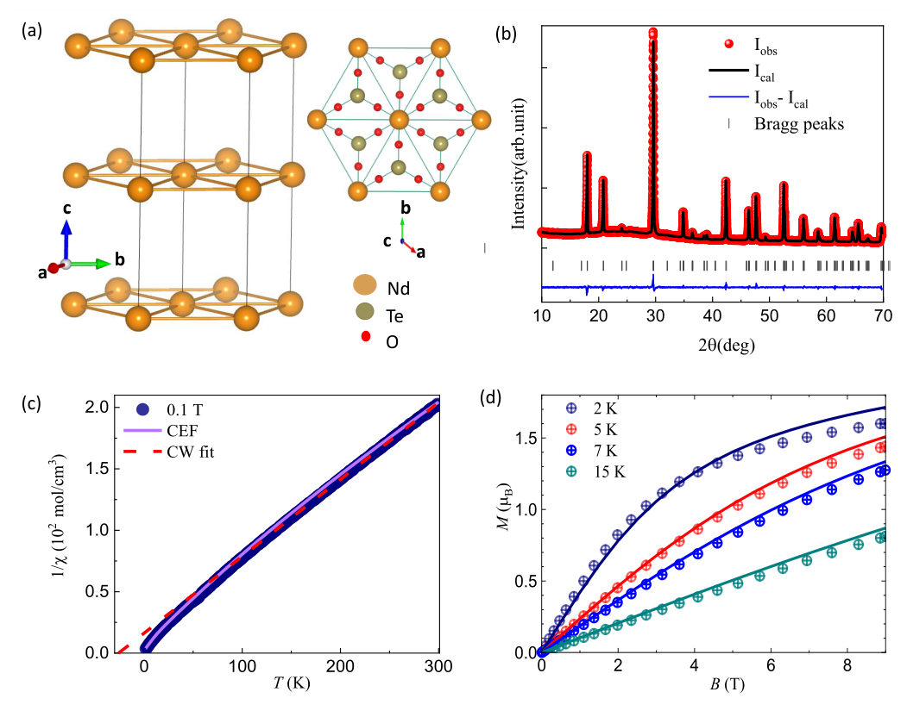
<figcaption class="paper-figure-caption"><b>Fig 1.</b> FIG. 1. (a) Schematic of the triangular lattice in K3NdTe2O9, where the magnetic Nd3+ ions form a triangular network in the ab-plane with dintra = 6.03 Å and dinter = 7.4 Å. The dominant magnetic superexchange interaction is mediated via Nd–O– Te–O–Nd exchange pathway. The right panel shows the triangular lattice formed by Nd3+ moments in the crystal structure of KNTO, illustrating the geometric frustration inherent to the lattice with possible exchange pathways. (b) Rietveld refinement of the powder X-ray diffraction pattern of KNTO. (c)Temperature-dependent inverse susceptibility measured under an applied field of 0.1 T. The inverse susceptibility is fitted with the Curie–Weiss law at...</figcaption>
</figure>
<figure class="paper-figure-card">
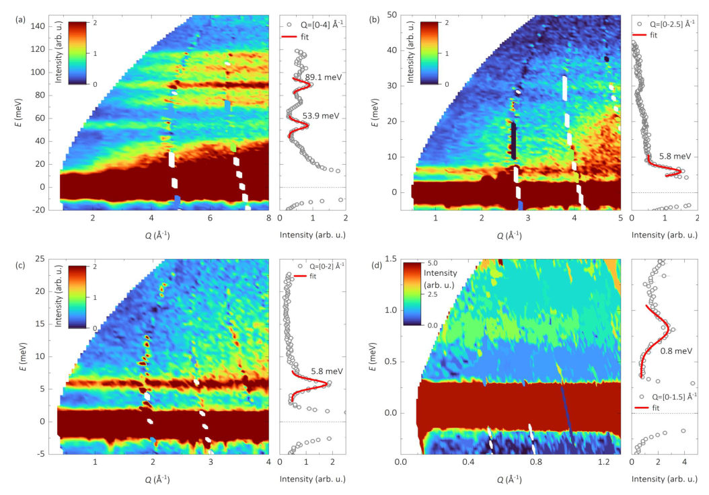
<figcaption class="paper-figure-caption"><b>Fig 2.</b> FIG. 2. Inelastic neutron scattering (INS) intensity at 5K for the incident neutron energies of 180, 60, 29.7 and 2 meV. Besides the broad diffuse phonon excitations at larger scattering vectors Q, there are clear additional flat bands at low Q that correspond to CEF levels. Furthermore, the flat bands at E &gt; 60 meV which have maximal intensity at ∼7 meV, most likely correspond to molecular vibrations from adsorbed water. For clarity, we also show the energy transfer integrated across the low Q range to emphasize the flat bands. The red lines are Gaussian fits, performed to precisely determined the energies of the CEF excitations.</figcaption>
</figure>
<figure class="paper-figure-card">
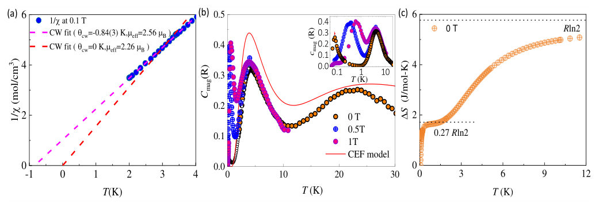
<figcaption class="paper-figure-caption"><b>Fig 3.</b> FIG. 3. (a) Temperature-dependent inverse magnetic susceptibility recorded at an applied field of 0.1 T is fitted using the Curie–Weiss law (dashed magenta line) and non-interacting Curie–Weiss law with ΘCW = 0 K (dashed red line). (b) Magnetic specific heat, obtained after subtracting the lattice contribution following the Debye model, measured under various magnetic fields. The solid red line is the CEF model. The inset highlights the low-temperature evolution of Cmag under applied magnetic fields. Zero-field magnetic specific heat exhibits a weak anomaly at 81 mK. (c) The temperature dependence of magnetic entropy in zero field. It reaches 88% of the expected R ln 2 at 12 K for an...</figcaption>
</figure>
<figure class="paper-figure-card">
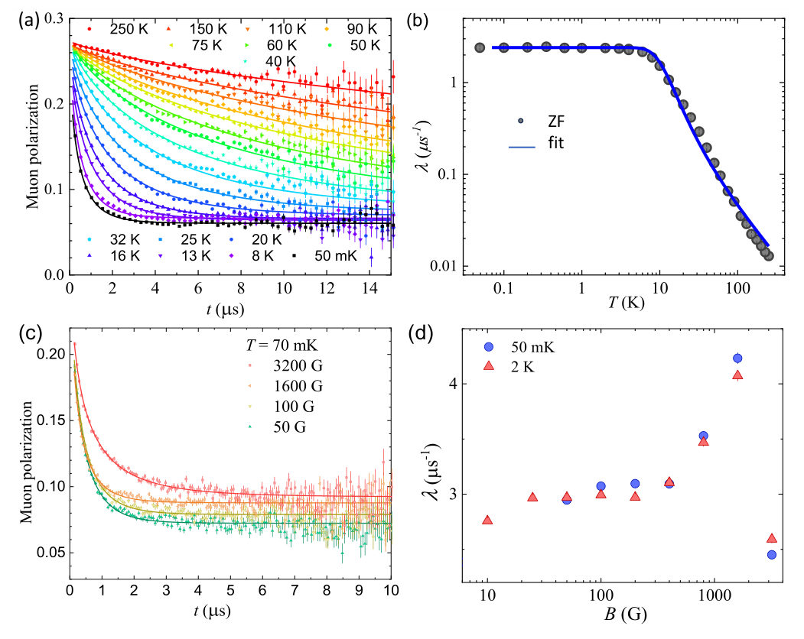
<figcaption class="paper-figure-caption"><b>Fig 4.</b> FIG. 4. (a) Zero-field µSR asymmetry spectra at selected temperatures, demonstrating the temperature evolution of the muon spin polarization. The solid lines are fits to a stretched exponential relaxation function, as discussed in the text (SI [51]). (b) The temperature dependence of µSR rate λ in zero field. The solid blue line shows the expected thermally activated behavior of the crystal electric field excitations as discussed in the text. (c) µSR asymmetry spectra in different applied longitudinal magnetic fields at 70 mK, demonstrating partial decoupling of muon relaxation with field. The solid lines are fits to a stretched-exponential relaxation function, PLF(t) = exp[−(λLFt)βLF where...</figcaption>
</figure>
</div>

<p><strong>Summary.</strong> This work investigates the exotic magnetism of $   ext{K}_3    ext{NdTe}_2 ext{O}_9$, a geometrically frustrated triangular lattice antiferromagnet. By combining $\mu	ext{SR}$, specific heat, and INS measurements, the authors confirm that the system enters a dynamic ground state characterized by $J_{	ext{eff}}=1/2$ moments. The results strongly support persistent spin dynamics rather than conventional long-range magnetic ordering down to very low temperatures.</p>
<p><strong>Why it may be interesting.</strong> The study provides experimental evidence for quantum disordered magnetic states (approaching QSL behavior) in a real material system, which is highly relevant to understanding frustrated magnetism and exotic ground states that can be modeled using advanced many-body techniques.</p>
<details>
<summary>Detailed structure</summary>
<p><strong>Main problem.</strong> To investigate exotic magnetism and persistent spin dynamics in a geometrically frustrated rare-earth triangular-lattice antiferromagnet.</p>
<p><strong>Main result.</strong> The experiments rule out long-range magnetic ordering down to 50 mK, confirming the existence of a fluctuating ground state characterized by $ ext{J}_{    ext{eff}}=1/2$ moments and persistent spin dynamics.</p>
<p><strong>Method.</strong> A combination of thermodynamic measurements (Specific Heat), inelastic neutron scattering ($    ext{INS}$), muon spin relaxation ($\mu  ext{SR}$), and magnetization studies were employed.</p>
<p><strong>Model / system.</strong> The system is the frustrated magnet $   ext{K}_3    ext{NdTe}_2 ext{O}_9$, where $  ext{Nd}^{3+}$ ions form a structurally perfect triangular lattice. The low-energy physics is modeled by effective $J_{	ext{eff}}=1/2$ moments interacting via strong exchange interactions.</p>
<p><strong>Key observables.</strong> Zero-field $\mu	ext{SR}$ asymmetry (showing no oscillations or 1/3 plateau), temperature dependence of the $\mu	ext{SR}$ relaxation rate ($\lambda$), and specific heat anomalies.</p>
<p><strong>Important parameters / regimes.</strong> Exchange interaction strength ($J_{	ext{ex}}/k_B \sim 0.6 	ext{ K}$); low temperatures down to $50 	ext{ mK}$; effective spin quantum number $  ext{J}_{    ext{eff}}=1/2$.</p>
<p><strong>Assumptions / limitations.</strong> The analysis assumes the Orbach relaxation mechanism describes the temperature dependence of the $\mu	ext{SR}$ rate, and that dipolar interactions are negligible compared to exchange interactions.</p>
<p><strong>Figures summary.</strong> Figures show $\mu	ext{SR}$ asymmetry spectra (zero-field and applied field) demonstrating persistent dynamics; plots illustrate the thermally activated behavior of the relaxation rate ($\lambda$) vs. temperature.</p>
<p><strong>Paper structure.</strong> The paper systematically presents evidence from multiple techniques: structural characterization, magnetic susceptibility/magnetization to establish $ ext{J}_{    ext{eff}}=1/2$ ground state and weak exchange coupling; then uses $\mu	ext{SR}$ and specific heat measurements to confirm the absence of static order and characterize the low-energy spin dynamics.</p>
</details>
<details>
<summary>Abstract</summary>
<p>The delicate interplay between competing degrees of freedom, anisotropy, and frustration-induced strong quantum fluctuations in pseudospin-$J_{\rm eff}=1/2$ rare-earth triangular-lattice antiferromagnets offers a promising platform for the experimental realization of exotic states with nontrivial low-energy excitations. Here, we present thermodynamic, inelastic neutron scattering (INS), and muon spin relaxation ($μ$SR) investigations of the frustrated magnet K$_3$NdTe$_2$O$9$, in which Nd$^{3+}$ ions constitute a structurally perfect triangular lattice with no detectable site disorder. The experiments reveal the realization of a Kramers doublet ground state with $J{\rm eff}=1/2$ moments, well separated from the first excited state, which interact antiferromagnetically with an exchange interaction of $\sim$0.6 K between the Nd$^{3+}$ moments in the triangular plane. The absence of oscillations and the so-called 1/3 plateau in the zero-field $μ$SR asymmetry down to 50 mK rules out long-range magnetic ordering and spin freezing on the $μ$SR time scale, respectively. The temperature dependence of the zero-field $μ$SR relaxation rate is well described by the Orbach relaxation mechanism, indicating the existence of fluctuating moments in the ground state of this frustrated magnet. Our results demonstrate exotic magnetism and persistent spin dynamics down to 50 mK. These observations establish this new family of frustrated rare-earth triangular-lattice antiferromagnets as a promising venue for the experimental realization of nontrivial quantum states with exotic low-energy excitations.</p>
</details>
<p><sub><a href="#top">↑ back to top</a></sub></p>

<p><a id="paper-2606.17422"></a></p>
<h3 id="broadband-high-level-squeezed-light-using-waveguide-optical-parametric-amplifiers-with-external-dispersion-compensation"><a href="http://arxiv.org/abs/2606.17422v1">Broadband High-Level Squeezed Light using Waveguide Optical Parametric Amplifiers with External Dispersion Compensation</a></h3>
<p><strong>Authors:</strong> Takumi Suzuki, Shotaro Oki, Kazuki Hirota, Takaya Hoshi, Ryuhoh Ide, Takahiro Kashiwazaki, Taichi Yamashima, Asuka Inoue, Takeshi Umeki, Mamoru Endo, Akira Furusawa<br>
<strong>Type:</strong> both · <strong>Category:</strong> quantum information and computing · <strong>PDF:</strong> <a href="https://arxiv.org/pdf/2606.17422v1">https://arxiv.org/pdf/2606.17422v1</a><br>
<strong>Analysis basis:</strong> full PDF text, analyzed in chunks
<strong>Topic relevance:</strong> 🔥 <code>quantum optics experiment</code> <strong>4/5</strong> · <code>interference shaping light</code> <strong>3/5</strong> · <code>Keldysh / 2PI / non-Gaussian methods</code> <strong>1/5</strong> · <code>QC/QI experiment</code> <strong>1/5</strong> · <code>driven-dissipative phase transition</code> <strong>1/5</strong> · <code>methods for driven-dissipative</code> <strong>1/5</strong></p>
<div class="figure-strip-hint">↔ Scroll figures horizontally</div>
<div class="paper-figures-scroll">
<figure class="paper-figure-card">
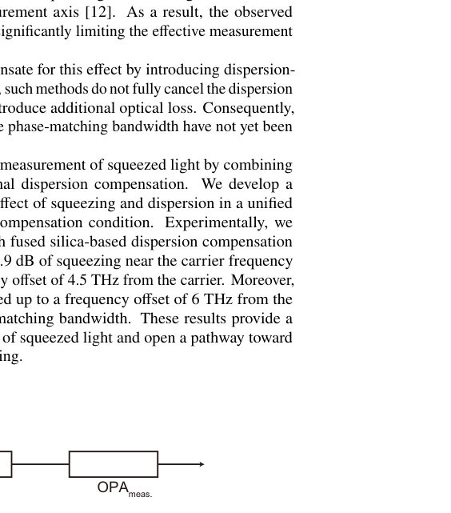
<figcaption class="paper-figure-caption"><b>Fig 1.</b> Fig. 1. Conceptual model of the two-stage OPA scheme. A squeezed vacuum generated in OPAsqz propagates through a dispersion-compensation element (DC) and is measured by phase-sensitive amplification in OPAmeas. The DC element cancels the frequency- dependent quadrature rotation accumulated between the two OPAs.</figcaption>
</figure>
<figure class="paper-figure-card">
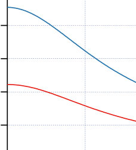
<figcaption class="paper-figure-caption"><b>Fig 2.</b> Fig. 2. Effective GDD of the squeezed quadrature versus squeezing level 10 log10 𝑒2𝑟</figcaption>
</figure>
<figure class="paper-figure-card">
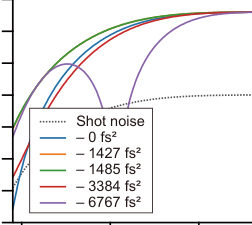
<figcaption class="paper-figure-caption"><b>Fig 3.</b> Fig. 3. Simulated PSA spectra (lossless) for several dispersion-compensation values 𝐷dc: 0, −1427 (analytical optimum), −1485 (±5 THz optimum), −3384 (zero-gain limit), and −6767 fs2 (full material compensation). (a) Squeezed and (b) anti-squeezed quadratures. Proper compensation broadens the squeezed band in (a); (b) is far less sensitive to dispersion.</figcaption>
</figure>
<figure class="paper-figure-card">
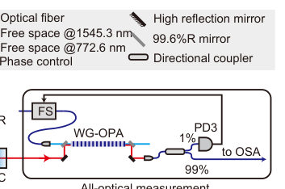
<figcaption class="paper-figure-caption"><b>Fig 4.</b> Fig. 4. Experimental setup. Squeezed light from OPAsqz (22 mm) is measured by PSA in OPAmeas (45 mm), both pumped at 388 THz (signal 194 THz). Fused-silica plates at the Brewster angle provide dispersion compensation. A probe beam (locked via a 99.6% mirror) and a separate lock beam (stabilized through an electro-optic modulator (EOM)) reference the two OPAs. Output is recorded with an optical spectrum analyzer (OSA).</figcaption>
</figure>
<figure class="paper-figure-card">
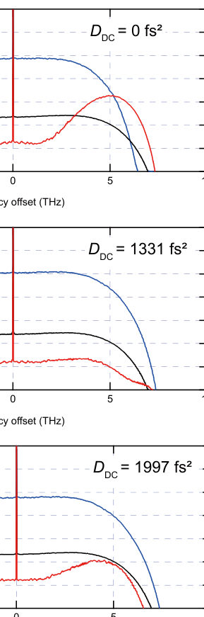
<figcaption class="paper-figure-caption"><b>Fig 5.</b> Fig. 5. Measured spectra of squeezing (red), anti-squeezing (blue), and shot noise (black) for (a) 𝐷DC = 0, (b) 1331 (near optimum), and (c) 1997 fs2 (overcompensation), where 𝐷DC ≡|𝐷dc|. Near-optimal compensation (b) gives the broadest squeezed band.</figcaption>
</figure>
</div>

<p><strong>Summary.</strong> The paper presents a method to achieve broadband characterization of squeezed vacuum states generated by waveguide OPAs. By introducing external dispersion compensation, the authors successfully mitigate frequency-dependent quadrature rotation caused by GVD. This breakthrough enables stable observation of high levels of squeezing over tens of THz bandwidths, advancing ultrafast quantum optics applications.</p>
<p><strong>Why it may be interesting.</strong> This work directly addresses a major technical hurdle—dispersion management—in realizing high-bandwidth quantum light sources necessary for advanced continuous-variable quantum information processing protocols.</p>
<details>
<summary>Detailed structure</summary>
<p><strong>Main problem.</strong> The primary challenge is achieving broadband characterization of squeezed light generated by waveguide Optical Parametric Amplifiers (OPAs) while overcoming the bandwidth limitation imposed by Group Velocity Dispersion (GVD).</p>
<p><strong>Main result.</strong> By implementing external dispersion compensation, the authors demonstrated maintaining more than 5 dB of squeezing up to a frequency offset of 4.5 THz, and confirming sub-shot-noise squeezing up to 6 THz.</p>
<p><strong>Method.</strong> The study combines theoretical modeling (Bloch–Messiah decomposition, covariance matrix formalism) with experimental measurements using two-stage OPA systems and external dispersion compensation elements.</p>
<p><strong>Model / system.</strong> The system involves a two-stage OPA setup ($    ext{OPAsqz}     o   ext{DC}     o   ext{OPAmeas}$) utilizing PPLN waveguides. The analysis tracks the evolution of quantum quadratures, incorporating effects from parametric gain and dispersion.</p>
<p><strong>Key observables.</strong> Squeezing level (dB), frequency offset ($\Omega$), effective Group Delay Dispersion (GDD) ($    ext{fs}^2$), and measurement efficiency ($\eta_{  ext{eff}}$).</p>
<p><strong>Important parameters / regimes.</strong> Frequency offsets up to 6 THz, optimal dispersion compensation values (e.g., $-1427 	ext{ fs}^2$), and waveguide transmittances ($T$).</p>
<p><strong>Assumptions / limitations.</strong> The analysis relies on the state remaining Gaussian for covariance matrix tracking; in practice, continuous tuning of dispersion is difficult, necessitating pump power adjustments.</p>
<p><strong>Figures summary.</strong> Figures illustrate the spectral measurements showing how squeezing bandwidth broadens significantly when external dispersion compensation is applied near an optimal value. Other figures show the dependence of effective gain and efficiency on loss/transmittance.</p>
<p><strong>Paper structure.</strong> The paper progresses from establishing the theoretical framework for broadband characterization, detailing the role of dispersion compensation in two-stage systems, analyzing the impact of intrinsic loss via covariance matrix methods, and concluding with experimental validation of the achieved bandwidths.</p>
</details>
<details>
<summary>Abstract</summary>
<p>We demonstrate broadband phase-sensitive amplification (PSA) measurement of squeezed light generated by a waveguide optical parametric amplifier (OPA) with external dispersion compensation. In broadband systems, group velocity dispersion (GVD) induces a frequency-dependent rotation of the squeezing axis, which limits the observable bandwidth in PSA measurements. To overcome this limitation, we introduce external dispersion compensation between two OPAs and suppress the quadrature rotation over a wide frequency range. As a result, we observe a maximum squeezing of 5.9 dB near the carrier frequency and more than 5 dB of squeezing up to a frequency offset of 4.5 THz from the carrier. Furthermore, squeezing below the shot-noise level is confirmed up to a frequency offset of 6 THz from the carrier, corresponding to the accessible phase-matching bandwidth of the waveguide OPA. Our results establish a practical method for broadband characterization of squeezed light and provide a key step toward ultrafast continuous-variable quantum information processing.</p>
</details>
<p><sub><a href="#top">↑ back to top</a></sub></p>

<p><a id="paper-2606.17248"></a></p>
<h3 id="spin-effects-in-the-particle-current-of-bose-einstein-condensates-in-synthetic-gauge-fields"><a href="http://arxiv.org/abs/2606.17248v1">Spin effects in the particle current of Bose-Einstein condensates in synthetic gauge fields</a></h3>
<p><strong>Authors:</strong> Hugo Bencomo Martín, Antonio Muñoz Mateo<br>
<strong>Type:</strong> theory · <strong>Category:</strong> quantum gases · <strong>PDF:</strong> <a href="https://arxiv.org/pdf/2606.17248v1">https://arxiv.org/pdf/2606.17248v1</a><br>
<strong>Analysis basis:</strong> full PDF text, analyzed in chunks
<strong>Topic relevance:</strong> 🔥 <code>analog quantum simulation</code> <strong>4/5</strong> · <code>exotic spin models in light-matter</code> <strong>3/5</strong> · <code>non-equilibrium dynamics</code> <strong>2/5</strong> · <code>Keldysh / 2PI / non-Gaussian methods</code> <strong>1/5</strong> · <code>spintronics-quantum-optics interface</code> <strong>1/5</strong></p>
<div class="figure-strip-hint">↔ Scroll figures horizontally</div>
<div class="paper-figures-scroll">
<figure class="paper-figure-card">
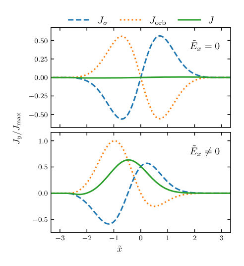
<figcaption class="paper-figure-caption"><b>Fig 1.</b> FIG. 1. Current density in the lowest Landau level (n = 0) of a system with Ex = 0 (top) and ˜Ex = Ex/Bz = 0.5 ωBℓB (bottom) as a function of the non-dimensional coordinate ˜x = (x −xk)/ℓB. As predicted by Eq. (16), the orbital and spin contributions that are odd in ˜x cancel locally (J = 0) in the absence of electric field, and produce the classical drift velocity J/|χ|2 = 0.5 ωBℓB in the presence of electric field. Units of Jmax = 4.36 × 10−2 ωB/ℓ2 B are used.</figcaption>
</figure>
<figure class="paper-figure-card">
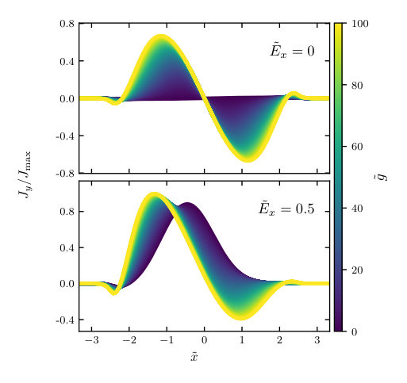
<figcaption class="paper-figure-caption"><b>Fig 2.</b> FIG. 2. Transverse profiles of the total current density Jy(x) in repulsively interacting BECs, confined within a 2D box of size Lx × Ly = 5ℓB × 10ℓB (with periodic boundary conditions along the y−direction) and subjected to a per- pendicular magnetic field Bz, for a continuous sweep of the interaction strength ˜g = mgN/ℏ2 ∈[0, 100]. Top: In the absence of electric field, Ex = 0. Bottom: For electric field ˜Ex = Ex/Bz = 0.5 ωBℓB. Units of Jmax = 3.13×10−2 ωB/ℓ2 B.</figcaption>
</figure>
<figure class="paper-figure-card">
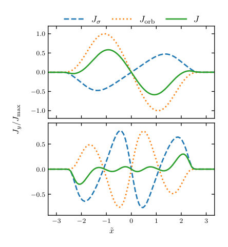
<figcaption class="paper-figure-caption"><b>Fig 3.</b> FIG. 3. Transverse profiles of spin Jσ, orbital Jorb, and total J current densities in systems with interaction strength gN = 50 ℏ2/m, and vanishing electric field Ex = 0. Top: y−independent currents in a smooth, excited state without vortices. Bottom: Currents on the line across the core of one of the two vortices that emerge in the ground state of the system. Units of Jmax = 2.69 × 10−2 ωB/ℓ2 B are used.</figcaption>
</figure>
<figure class="paper-figure-card">
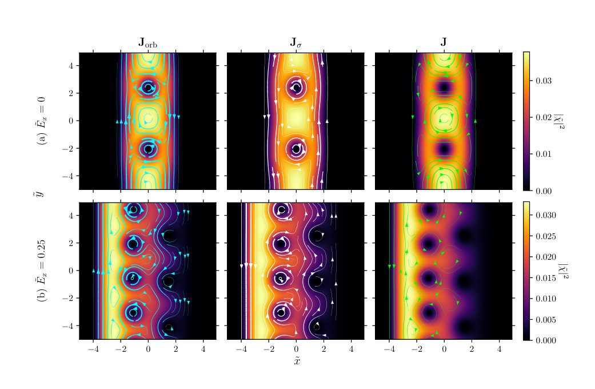
<figcaption class="paper-figure-caption"><b>Fig 4.</b> FIG. 4. Spatial distribution of the orbital Jorb, spin Jσ, and total J current densities (represented by streamlines of width proportional to current magnitude) in a BEC with interaction stength gN = 50 ℏ2/m trapped by box potential and subjected to a perpendicular magnetic field Bz. The underlying color maps represent the normalized particle density |˜χ|2 = (ℓB|χ|)2/N. (a) In the absence of an external electric field, Ex = 0 and within a box size 5ℓB ×10ℓB, the ground state nucleates two vortices. (b) In a wider box 8ℓB × 10ℓB, and for an electric field Ex/Bz = 0.25 ωBℓB a vortex lattice emerges displaced and distorted due to the combined effects of local quantized circulation around...</figcaption>
</figure>
</div>

<p><strong>Summary.</strong> This theoretical paper examines the role of spin effects on particle currents within spinor Bose-Einstein condensates placed in synthetic gauge fields. The authors show that the spin current is a non-negligible component of the total current, which alters the system's response to magnetic flux quantization. By analyzing both non-interacting and interacting regimes, they map out how these spin dynamics govern superfluid behavior in artificial quantum Hall setups.</p>
<p><strong>Why it may be interesting.</strong> This work directly addresses how internal degrees of freedom (spin) couple to external synthetic fields ($\mathbf{A}, \mathbf{E}$) in ultracold atomic systems, providing crucial insights into superfluid dynamics beyond simple scalar models.</p>
<details>
<summary>Detailed structure</summary>
<p><strong>Main problem.</strong> The study investigates how spin effects, specifically the spin term contribution to the particle current density, manifest in Bose-Einstein condensates (BECs) subjected to synthetic gauge fields.</p>
<p><strong>Main result.</strong> The spin term is physically relevant and contributes to the superfluid velocity, modifying its relationship with magnetic flux quantization compared to scalar superfluids. Furthermore, increasing interactions causes the relative contribution of the spin current to decrease.</p>
<p><strong>Method.</strong> The analysis involves deriving the Pauli current density from non-relativistic limits (like the Dirac equation) and solving the resulting mean-field Hamiltonian for both non-interacting and interacting regimes.</p>
<p><strong>Model / system.</strong> The system is a non-relativistic BEC of pseudospin-1/2 bosonic particles simulating a synthetic Hall system, governed by a Pauli Hamiltonian incorporating minimal coupling to synthetic gauge fields (magnetic and electric).</p>
<p><strong>Key observables.</strong> Particle current density (J), spin current density (J_sigma), superfluid velocity (v), and the fluxoid quantization condition ($\Phi'$).</p>
<p><strong>Important parameters / regimes.</strong> Interaction strength ($g$), magnetic field ($B_z$), and electric field ($E_x$).</p>
<p><strong>Assumptions / limitations.</strong> The analysis operates within a mean-field framework, and specific calculations often assume approximations like the Lowest Landau Level (LLL) or Thomas-Fermi ansatz.</p>
<p><strong>Figures summary.</strong> Figures illustrate spatial distributions of orbital, spin, and total current densities ($\mathbf{J}_{	ext{orb}}$, $\mathbf{J}_{\sigma}$, $\mathbf{J}$) in vortex lattices, showing how external electric fields shift density profiles and affect edge currents.</p>
<p><strong>Paper structure.</strong> The paper progresses from deriving the general Pauli equation and current density to applying it to a specific Hall system Hamiltonian. It then analyzes solutions in the non-interacting limit (Landau levels) before tackling the interacting regime using Thomas-Fermi approximations, concluding with detailed analysis of current components and vortex physics.</p>
</details>
<details>
<summary>Abstract</summary>
<p>Although spin is not a relativistic quantity, its effects are not always manifestly captured within non-relativistic theoretical frameworks. We report on one of these effects: the spin term in the particle current density, which could be observed in the setup of a synthetic Hall system made with non-relativistic Bose-Einstein condensates of pseudospin-1/2 bosonic particles. By tuning the interaction strength, the system can show how the spin term in the particle current is needed for the local matching of classical drift velocity in the ground state of the non-interacting system, whereas for increasing interactions the spin-to-orbital current ratio decreases. In either case, since the overall particle velocity changes with the spin term contribution, so does its circulation in a loop, which in turn has physical consequences for its relationship with the Aharonov-Bohm phase shift.</p>
</details>
<p><sub><a href="#top">↑ back to top</a></sub></p>

<p><a id="paper-2606.17842"></a></p>
<h3 id="the-antiferromagnetic-transition-in-the-frustrated-bixbyite-math227math-femath228mathomath229math-magnet"><a href="http://arxiv.org/abs/2606.17842v1">The antiferromagnetic transition in the frustrated bixbyite $β$-Fe$_2$O$_3$ magnet</a></h3>
<p><strong>Authors:</strong> Chenjun Tang, Ondřej Malina, Jiři Tuček, Francois Fauth, Marti Gich, Jose Luis Garcia-Muñoz<br>
<strong>Type:</strong> experiment · <strong>Category:</strong> strongly correlated electrons · <strong>PDF:</strong> <a href="https://arxiv.org/pdf/2606.17842v1">https://arxiv.org/pdf/2606.17842v1</a><br>
<strong>Analysis basis:</strong> full PDF text, analyzed in chunks
<strong>Topic relevance:</strong> 🔥 <code>analog quantum simulation</code> <strong>4/5</strong> · 🔥 <code>exotic spin models in light-matter</code> <strong>4/5</strong> · <code>spintronics-quantum-optics interface</code> <strong>3/5</strong></p>
<div class="figure-strip-hint">↔ Scroll figures horizontally</div>
<div class="paper-figures-scroll">
<figure class="paper-figure-card">
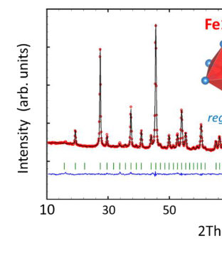
<figcaption class="paper-figure-caption"><b>Fig 1.</b> Figure 1. Rietveld refinement (black line) of the room temperature D1B@ILL (λ = 1.28 Å) neutron diffraction pattern (red circles) of -Fe2O3 at 300 K (Ia-3). Structural parameters are given in Table I.</figcaption>
</figure>
<figure class="paper-figure-card">
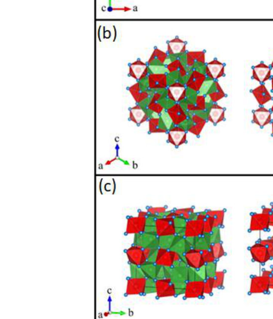
<figcaption class="paper-figure-caption"><b>Fig 2.</b> Figure 2. Room-temperature crystal structure of -Fe2O3. Projections of the Ia-3 structure refined at 300 K for different unit-cell orientations. The two crystallographically distinct Fe1 (red) and Fe2 (green) sites, together with the O atoms (blue), are shown in the figure. For each orientation, three representations are provided: (a) the complete structure, (b) only the regular Fe1O6 octahedra (red), and (c) only the distorted Fe2O6 octahedra (green).</figcaption>
</figure>
<figure class="paper-figure-card">
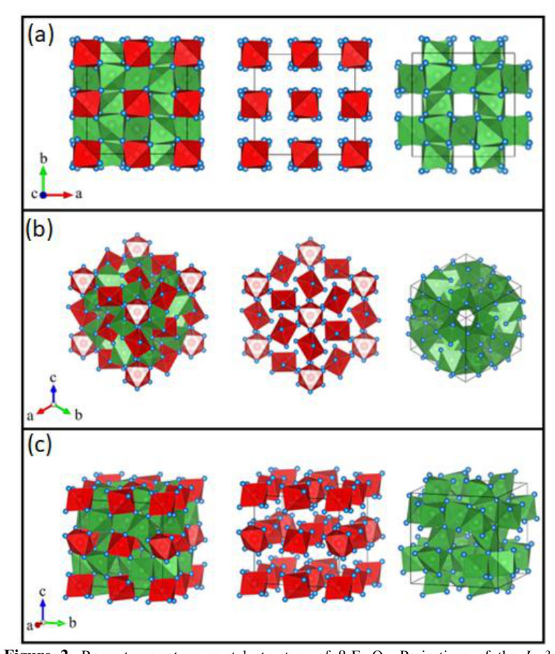
<figcaption class="paper-figure-caption"><b>Fig 3.</b> Figure 2 presents the refined cubic structure in three unit-cell orientations. For each orientation</figcaption>
</figure>
<figure class="paper-figure-card">
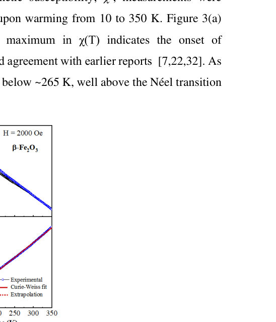
<figcaption class="paper-figure-caption"><b>Fig 4.</b> Figure 3. Magnetic susceptibility. (a) FC and ZFC susceptibility curves of the -Fe2O3 sample (H=2 kOe). (b) Inverse susceptibility and Curie-Weiss fit above the antiferromagnetic transition. Inset: extrapolated Curie temperature (C = – 847 K).</figcaption>
</figure>
<figure class="paper-figure-card">
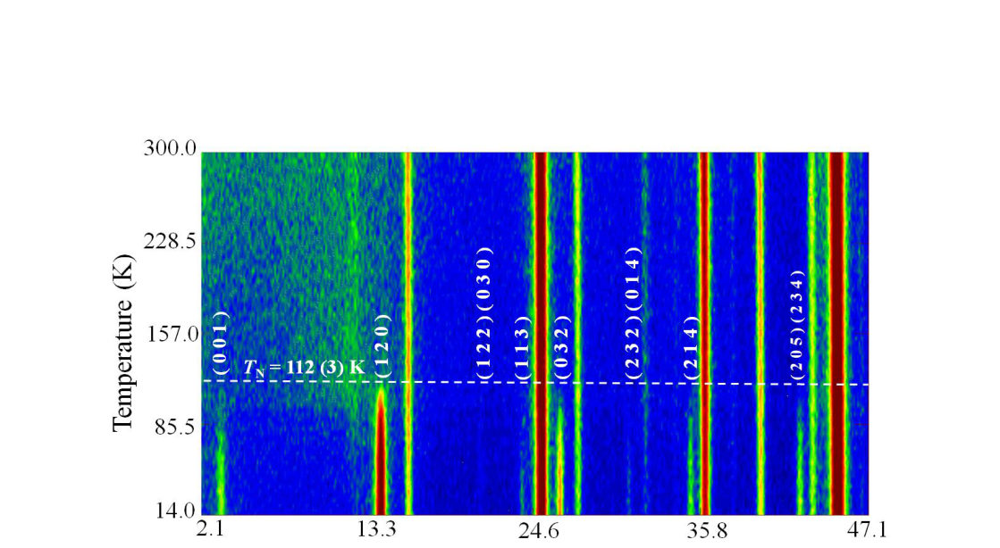
<figcaption class="paper-figure-caption"><b>Fig 5.</b> Figure 4. Contour maps of -Fe2O3 showing the 2θ-T projection of the temperature evolution of the neutron diffraction intensity (D1B@ILL, λ = 1.28 Å). The low-Q region highlights the onset and temperature evolution of the main magnetic reflections below the antiferromagnetic transition.</figcaption>
</figure>
</div>

<p><strong>Summary.</strong> This work experimentally investigates the temperature-driven antiferromagnetic transition in $\beta$-Fe$_2$O$_3$, revealing a complex, noncollinear magnetic ordering below $T_N \approx 112$ K. Using neutron and X-ray diffraction, the authors map out how the crystal symmetry breaks to accommodate this highly frustrated magnetic state. The findings highlight that local structural motifs dictate exotic magnetic couplings, suggesting routes for functional material design.</p>
<p><strong>Why it may be interesting.</strong> The investigation into geometric frustration and complex, multi-sublattice noncollinear magnetism in an insulating oxide is highly relevant to understanding emergent quantum phenomena in strongly correlated materials, particularly those exhibiting competing magnetic interactions.</p>
<details>
<summary>Detailed structure</summary>
<p><strong>Main problem.</strong> The magnetic properties of $\beta$-Fe$_2$O$_3$, a bixbyite transition-metal oxide, are poorly characterized despite the extensive study of Fe$_2$O$_3$. The research aims to investigate its temperature-driven magnetic transition and resulting complex magnetic structure.</p>
<p><strong>Main result.</strong> The material undergoes an abrupt antiferromagnetic (AFM) transition below $T_N \approx 112$ K, establishing a noncollinear spin arrangement characterized by the propagation vector $\mathbf{k}=(1,1,1)$. The resulting magnetic ground state belongs to the primitive cell MSG $P\bar{I}a\bar{3}$, which is non-polar.</p>
<p><strong>Method.</strong> The study employs complementary experimental techniques including neutron and synchrotron X-ray diffraction (NPD/XRPD) across temperature ranges, complemented by SQUID magnetometry for bulk susceptibility measurements.</p>
<p><strong>Model / system.</strong> The physical system is the $\beta$-Fe$_2$O$_3$ bixbyite magnet. The magnetic interactions are governed by complex superexchange pathways ($   ext{Fe}^{3+–O–Fe}^{3+}$) that promote geometric frustration, leading to noncollinear magnetism involving distinct sublattices ($   ext{Fe}1$ and $ ext{Fe}2$).</p>
<p><strong>Key observables.</strong> Antiferromagnetic transition temperature ($T_N \approx 112$ K), magnetic propagation vector $\mathbf{k}=(1,1,1)$, symmetry changes from $Ia\bar{3}$ to $P\bar{I}a\bar{3}$, and calculated exchange integrals ($J_{ij}$).</p>
<p><strong>Important parameters / regimes.</strong> Frustration index $f \approx 7.56$, Néel temperature $T_N \approx 112$ K, and specific magnetic moments ($\mu$).</p>
<p><strong>Assumptions / limitations.</strong> The analysis relies on Rietveld refinement of diffraction data to determine structural and magnetic symmetry changes across the transition.</p>
<p><strong>Figures summary.</strong> Figures illustrate the crystal structure projections showing $ ext{Fe}1\text{O}_6$ and distorted $ ext{Fe}2\text{O}_6$ octahedra, and detailed visualizations (S3, S4) map out the complex noncollinear spin arrangement within the $[111]$ planes.</p>
<p><strong>Paper structure.</strong> The paper progresses from characterizing the room-temperature structure via diffraction to identifying the magnetic transition temperature ($T_N$) using magnetometry. It then uses NPD below $T_N$ to determine the symmetry breaking and noncollinear spin configuration, culminating in detailed analysis of exchange interactions governing the complex magnetic ground state.</p>
</details>
<details>
<summary>Abstract</summary>
<p>Although Fe$_2$O$_3$ compounds are among the most extensively studied transition-metal oxides, the magnetic properties of $β$-Fe$_2$O$_3$ remain poorly characterized. Using neutron and synchrotron X-ray diffraction, we investigate the temperature-driven magnetic transition in $β$-Fe$_2$O$_3$. A noncollinear antiferromagnetic structure sets in abruptly via activation of irrep $mH_1^{+}$ at the H-point [$\mathbf{k}=(1,1,1)$] together with antitranslation $(1'|\tfrac{1}{2},\tfrac{1}{2},\tfrac{1}{2})$. Below $T_{\mathrm{N}}$, the magnetic cell becomes primitive $(P_I a \bar{3})$, yielding two interpenetrating primitive cubic subcells with inverted moments and non-polar type-IV symmetry. All Fe$^{3+}$-O-Fe$^{3+}$ exchanges are antiferromagnetic, and the bixbyite structure promotes geometric frustration and noncollinear magnetism through coexisting magnetic sublattices with distinct symmetries and easy axes. Its frustration index $f \simeq 7.6$ is among the highest reported for binary magnetic oxides. In $\{111\}$ planes, distorted Fe2O$_6$ octahedra form hexagonal rings interconnected by triangular units. Notably, hexagonal Fe2 rings host a central Fe1 ion with strong Ising-like anisotropy, which could act as a switching element for the rings' magnetic state. These features point to routes for functional design.</p>
</details>
<p><sub><a href="#top">↑ back to top</a></sub></p>

<p><a id="paper-2606.17158"></a></p>
<h3 id="fermionic-hamiltonian-engineering-with-local-control"><a href="http://arxiv.org/abs/2606.17158v1">Fermionic Hamiltonian engineering with local control</a></h3>
<p><strong>Authors:</strong> Özgün Kum, Matthias Zipper, Ludwig Mathey, Martin Kliesch<br>
<strong>Type:</strong> theory · <strong>Category:</strong> strongly correlated electrons · <strong>PDF:</strong> <a href="https://arxiv.org/pdf/2606.17158v1">https://arxiv.org/pdf/2606.17158v1</a><br>
<strong>Analysis basis:</strong> full PDF text, analyzed in chunks
<strong>Topic relevance:</strong> 🔥 <code>analog quantum simulation</code> <strong>4/5</strong> · <code>non-equilibrium dynamics</code> <strong>3/5</strong> · <code>driven-dissipative phase transition</code> <strong>1/5</strong> · <code>methods for driven-dissipative</code> <strong>1/5</strong> · <code>non-equilibrium universality</code> <strong>1/5</strong></p>
<div class="figure-strip-hint">↔ Scroll figures horizontally</div>
<div class="paper-figures-scroll">
<figure class="paper-figure-card">
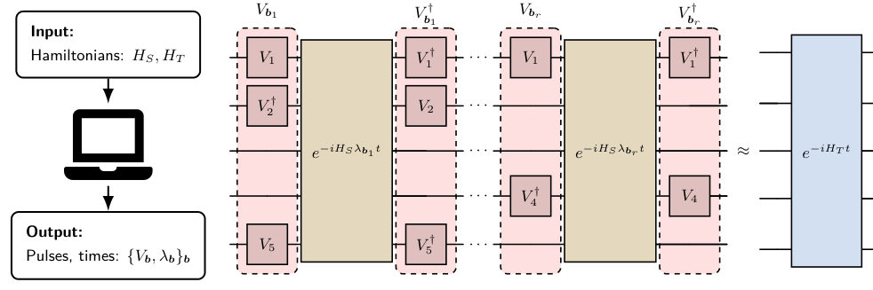
<figcaption class="paper-figure-caption"><b>Fig 1.</b> Figure 1. Schematic overview of the fermionic Hamiltonian engineering protocol. Given a description of a system HS and a target Hamiltonian HT , the algorithm runs in poly(n) time and returns local pulses Vb and quantum evolution times λb. This output is then used to construct the experimental implementation. Here the implementation is depicted using a quantum circuit for simplicity, where each line corresponds to a fermionic mode, but in general the framework is applicable to arbitrary geometries. The red boxes depict local unitaries from the set {1, Vj, V † j }, for mode j. The product of such local unitaries comprise a local pulse, shown here as vertical boxes with dashed borders. Using...</figcaption>
</figure>
<figure class="paper-figure-card">
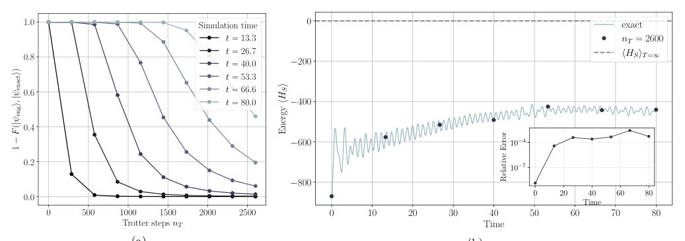
<figcaption class="paper-figure-caption"><b>Fig 2.</b> Figure 3. Numerical simulation of the Harper–Hofstadter dynamics on a 32 × 34 lattice with n = 1088 modes at half-filling N = 544. (a) Infidelity 1 −F(|ψeng⟩, |ψexact⟩) between the engineered state |ψeng⟩and the exact target state |ψexact⟩as a function of the number of Trotter steps. The engineered evolution converges to the exact evolution for a wide range of simulation times as the number of Trotter steps is increased. (b) The energy ⟨HS⟩of the time evolved state simulated exactly using direct exponentiation of the target Hamiltonian, and using the FHE method with nT = 2600 Trotter steps. The inset plot shows the evolution of the relative error |⟨HS⟩exact −⟨HS⟩eng|/|⟨HS⟩exact|. The dashed...</figcaption>
</figure>
<figure class="paper-figure-card">
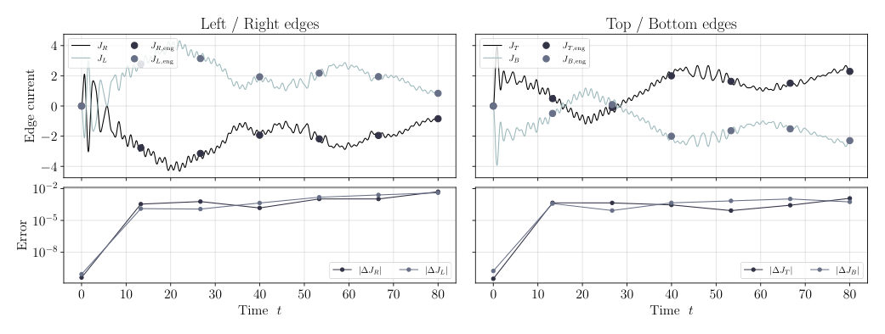
<figcaption class="paper-figure-caption"><b>Fig 3.</b> Figure 4. Numerical simulation of the edge currents for the Harper–Hofstadter model on a 32 × 34 lattice with 1088 modes at half-filling N = 544. The top plots show the edge currents for the four edges of the lattice as functions of time, where the solid lines correspond to exact evolution obtained by directly exponentiating the target Hamiltonian, and the dots correspond to the observables obtained through the engineered evolution with the number of Trotter steps set to nT = 2600. As expected, both the left-right and the top-bottom edges are seen to start with no edge current but then exhibit the signature chiral currents of the Harper–Hofstadter model. The bottom plots show the error...</figcaption>
</figure>
<figure class="paper-figure-card">
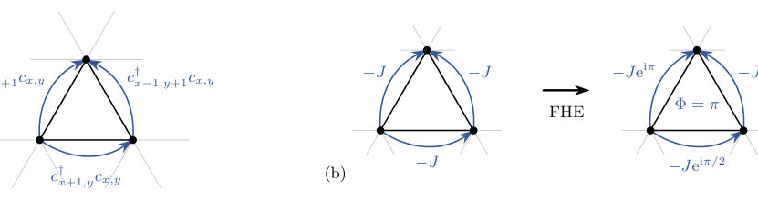
<figcaption class="paper-figure-caption"><b>Fig 4.</b> Figure 5. (a) The three nearest-neighbour tunnelling operators on a triangular lattice plaquette, with each arrow indicating the direction of hopping for one term in HS. (b) Fermionic Hamiltonian engineering on a triangular plaquette. The system Hamiltonian has uniform tunnelling coefficients (left), which the protocol maps to engineered coefficients with phases eiπ/2, eiπ, e−iπ/2 on the three bonds, producing a π-flux per plaquette (right). Labels indicate the coefficient of the directed hopping along each arrow.</figcaption>
</figure>
<figure class="paper-figure-card">
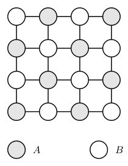
<figcaption class="paper-figure-caption"><b>Fig 5.</b> Figure 6. A 4 × 4 square lattice with a bipartition into A and B sublattices.</figcaption>
</figure>
</div>

<p><strong>Summary.</strong> The paper presents a novel framework for fermionic Hamiltonian engineering that allows researchers to simulate target Hamiltonians unattainable with the underlying quantum hardware. By interleaving free evolution under the system Hamiltonian with local unitary pulses, it achieves robust control over complex couplings, notably realizing arbitrary complex tunneling coefficients.</p>
<p><strong>Why it may be interesting.</strong> This work provides a powerful, hardware-aware tool for simulating complex correlated electron physics by circumventing native Hamiltonian limitations, which is crucial for modeling high-Tc superconductivity.</p>
<details>
<summary>Detailed structure</summary>
<p><strong>Main problem.</strong> The primary goal is to engineer effective time evolution under a desired target fermionic Hamiltonian ($H_T$) that may not be natively supported by the quantum hardware.</p>
<p><strong>Main result.</strong> The framework successfully realizes arbitrary complex tunneling coefficients and simulates dynamics robustly, avoiding energy absorption issues associated with standard Floquet engineering techniques.</p>
<p><strong>Method.</strong> It achieves this by conjugating free evolution under the native system Hamiltonian ($H_S$) with sequences of experimentally feasible local fermionic unitaries, optimized via a linear program.</p>
<p><strong>Model / system.</strong> The method is applied to general fermionic quantum many-body systems, exemplified by the non-interacting Harper-Hofstadter model and interacting Fermi-Hubbard chains. The underlying physics relates to ultracold atoms in optical lattices.</p>
<p><strong>Key observables.</strong> State fidelity ($F$), energy expectation value ($\langle H_S 
angle$), and bond currents ($\langle J_{kj} 
angle$).</p>
<p><strong>Important parameters / regimes.</strong> The ratio of interaction strength to hopping parameter ($U/t$) can be tuned, and the engineering process is constrained by the connectivity of $H_S$.</p>
<p><strong>Assumptions / limitations.</strong> The method assumes the existence of local fermionic unitaries that are experimentally feasible. It avoids continuous energy absorption inherent in standard Floquet driving.</p>
<p><strong>Figures summary.</strong> Figures schematically illustrate the protocol, showing how local pulses modify time evolution under $H_S$ to approximate $e^{-iH_T t}$. Comparisons show convergence towards exact dynamics without heating.</p>
<p><strong>Paper structure.</strong> The paper introduces the general framework using conjugation and optimization (LP). It then applies this to specific models like the Harper-Hofstadter model and the Fermi-Hubbard chain, detailing how local unitaries control hopping terms and interaction ratios.</p>
</details>
<details>
<summary>Abstract</summary>
<p>Quantum simulators enable the exploration of complex quantum phenomena in condensed-matter systems by reproducing their dynamics on controllable quantum devices. However, experimental constraints often restrict the class of Hamiltonians that can be realized natively. Hamiltonian engineering addresses this limitation by expanding the set of accessible target Hamiltonians from a fixed system Hamiltonian defined by the hardware. We introduce a new framework for fermionic Hamiltonian engineering based on conjugating free evolution under the system Hamiltonian with sequences of experimentally feasible local fermionic unitaries. The required sequences and free-evolution times are obtained efficiently via a linear program. By interleaving system evolution with these local unitaries, our method realizes effective time evolution under a broad class of target Hamiltonians, with intrinsic robustness to finite-pulse-time errors. In particular, we demonstrate that arbitrary complex tunnelling coefficients can be realized, constrained only by the connectivity of the underlying system Hamiltonian. We illustrate this capability by engineering the dynamics of the non-interacting Harper-Hofstadter model on a 1088-mode lattice and an interacting Fermi-Hubbard chain with complex tunnelling coefficients. By construction, our approach avoids the continuous energy absorption inherent to Floquet engineering.</p>
</details>
<p><sub><a href="#top">↑ back to top</a></sub></p>

<p><a id="paper-2606.17148"></a></p>
<h3 id="quantum-resources-and-wigner-symmetry-in-nucleon-nucleon-scattering-from-effective-field-theory"><a href="http://arxiv.org/abs/2606.17148v1">Quantum Resources and Wigner Symmetry in Nucleon-Nucleon Scattering from Effective Field Theory</a></h3>
<p><strong>Authors:</strong> Ian Low, Thomas R. Richardson, Sokratis Trifinopoulos<br>
<strong>Type:</strong> theory · <strong>Category:</strong> quantum information and computing · <strong>PDF:</strong> <a href="https://arxiv.org/pdf/2606.17148v1">https://arxiv.org/pdf/2606.17148v1</a><br>
<strong>Analysis basis:</strong> full PDF text, analyzed in chunks
<strong>Topic relevance:</strong> 🔥 <code>entanglement &amp; information structure</code> <strong>4/5</strong> · <code>Keldysh / 2PI / non-Gaussian methods</code> <strong>1/5</strong> · <code>analog quantum simulation</code> <strong>1/5</strong> · <code>correlated / nonlocal dissipation</code> <strong>1/5</strong> · <code>driven-dissipative phase transition</code> <strong>1/5</strong> · <code>methods for driven-dissipative</code> <strong>1/5</strong> · <code>non-equilibrium dynamics</code> <strong>1/5</strong></p>
<div class="figure-strip-hint">↔ Scroll figures horizontally</div>
<div class="paper-figures-scroll">
<figure class="paper-figure-card">
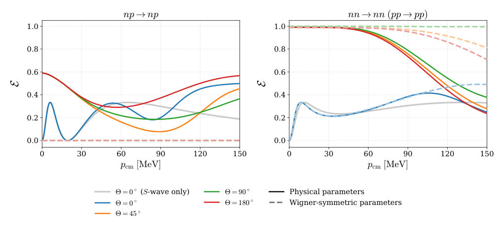
<figcaption class="paper-figure-caption"><b>Fig 1.</b> FIG. 1. Entanglement power E, Eq. (11), versus center-of-mass momentum for Θ = 0◦, 45◦, 90◦, 180◦in np →np (left) and nn →nn (right). Curves are colored by scattering angle. For each angle, colored solid lines use the physical ERE parameters and colored dashed lines use the Wigner-symmetric benchmark. The Θ = 0◦curves use the full S operator, while the nonforward curves use the normalized transition amplitude, as specified in Eq. (3). The solid light-gray curve is a forward reference using the physical ERE parameters and the full unitary S operator restricted to the S-wave sector; in the right panel this is the Pauli-restricted same-nucleon analogue, where antisymmetry removes the triplet S...</figcaption>
</figure>
<figure class="paper-figure-card">
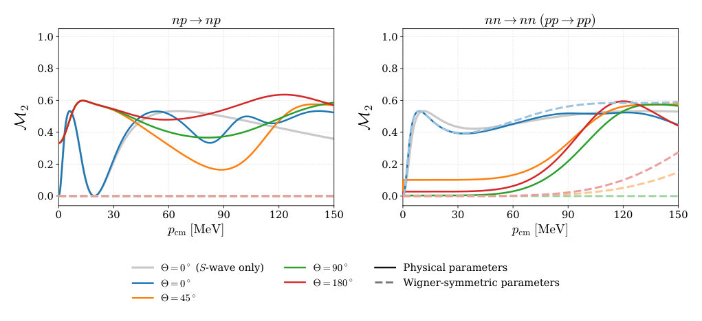
<figcaption class="paper-figure-caption"><b>Fig 2.</b> FIG. 2. Same as Fig. 1, but for the two-qubit-stabilizer-averaged magic power M2, Eq. (14). The light-gray curve uses the same stabilizer-average convention as Ref. [47].</figcaption>
</figure>
<figure class="paper-figure-card">
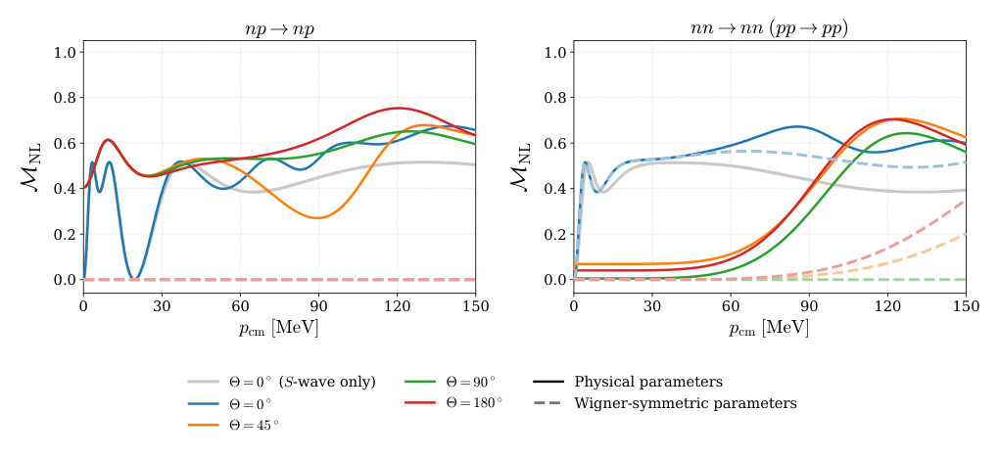
<figcaption class="paper-figure-caption"><b>Fig 3.</b> FIG. 3. Same as Fig. 1, but for the two-qubit-stabilizer-averaged non-local magic power MNL, Eq. (15). The light-gray curve uses the same stabilizer-average convention as Ref. [48].</figcaption>
</figure>
</div>

<p><strong>Summary.</strong> This work analyzes quantum resources like entanglement in low-energy nucleon-nucleon scattering using Effective Field Theory. It demonstrates that enhanced Wigner symmetry suppresses resource generation in $np$ scattering, while Pauli exclusion maintains it in $nn$ scattering. The study successfully connects fundamental symmetries and partial wave structure to measurable quantum information properties.</p>
<p><strong>Why it may be interesting.</strong> It provides a concrete physical system (nuclear scattering) where fundamental symmetries dictate the capacity for generating non-classical correlations, linking nuclear structure theory to quantum information diagnostics.</p>
<details>
<summary>Detailed structure</summary>
<p><strong>Main problem.</strong> The study investigates how quantum resources, such as entanglement and magic power, are generated during low-energy nucleon-nucleon scattering.</p>
<p><strong>Main result.</strong> Wigner's SU(4) symmetry causes the neutron-proton amplitude to generate no new quantum resources, while the identical-nucleon channel remains resource-generating due to Pauli exclusion constraints.</p>
<p><strong>Method.</strong> The authors calculate resource measures (entanglement power, magic power) by analyzing the scattering operator acting on spin qubits within the framework of pionless effective field theory.</p>
<p><strong>Model / system.</strong> The system is low-energy nucleon-nucleon ($ ext{NN}$) scattering ($np$ and $nn$) analyzed using next-to-leading order pionless Effective Field Theory ($  ext{EFT}_{\pi/  ext{}}$). Spin degrees of freedom are treated as qubits.</p>
<p><strong>Key observables.</strong> Entanglement power, stabilizer magic power, non-local magic power, and partial wave couplings ($A(L	ext{State})$).</p>
<p><strong>Important parameters / regimes.</strong> Low center-of-mass momentum ($p$), scattering angle ($\Theta$), and EFT parameters like scattering lengths and effective ranges.</p>
<p><strong>Assumptions / limitations.</strong> The analysis extends previous studies to include P-waves (NLO in $   ext{EFT}_{\pi/  ext{}}$) and compares physical results against the idealized Wigner SU(4) symmetry limit.</p>
<p><strong>Figures summary.</strong> Figures compare entanglement power ($E$) and magic power ($\mathcal{M}$) for $np 	o np$ and $nn 	o nn$ channels, contrasting physical predictions (solid lines) with Wigner-symmetric benchmarks (dashed lines).</p>
<p><strong>Paper structure.</strong> The paper systematically develops the resource measures within EFT, analyzes the impact of Wigner symmetry on partial wave couplings, and compares the resulting quantum resource generation in the $np$ vs. $nn$ channels.</p>
</details>
<details>
<summary>Abstract</summary>
<p>We study quantum resources in the spin degrees of freedom, such as entanglement, stabilizer magic, and non-local magic, in low-energy nucleon-nucleon scattering through next-to-leading order in pionless effective field theory. Treating each nucleon spin as a qubit, we calculate the corresponding resource-generating powers of the scattering operator at generic center-of-mass momentum and scattering angle $Θ$. The analysis retains $S$- and $P$-wave channels generated by two-derivative contact interactions. When the microscopic physics exhibits Wigner's $SU(4)$ spin-flavor symmetry, the neutron-proton amplitude becomes proportional to the spin-space identity operator and therefore generates no new resources after scattering, extending an observation previously made for leading-order $S$-wave scattering. The same-nucleon channel remains resource-generating because constraints from identical particles project out part of the Hilbert space. These results show how enhanced symmetries, partial-wave structure, and resource generation are intertwined in low-energy two-body scattering.</p>
</details>
<p><sub><a href="#top">↑ back to top</a></sub></p>

<p><a id="paper-2606.17647"></a></p>
<h3 id="from-period-finding-to-lattice-sampling-experimental-insights-into-shors-and-regevs-factoring-algorithms"><a href="http://arxiv.org/abs/2606.17647v1">From Period Finding to Lattice Sampling: Experimental Insights into Shor's and Regev's Factoring Algorithms</a></h3>
<p><strong>Authors:</strong> Daniela Falcó, Arturo Rodríguez, Guillermo Rivas, Ricardo S. Alonso<br>
<strong>Type:</strong> experiment · <strong>Category:</strong> quantum information and computing · <strong>PDF:</strong> <a href="https://arxiv.org/pdf/2606.17647v1">https://arxiv.org/pdf/2606.17647v1</a><br>
<strong>Analysis basis:</strong> full PDF text, analyzed in chunks
<strong>Topic relevance:</strong> 🔥 <code>QC/QI experiment</code> <strong>4/5</strong> · <code>entanglement &amp; information structure</code> <strong>2/5</strong> · <code>quantum measurements</code> <strong>1/5</strong></p>
<div class="figure-strip-hint">↔ Scroll figures horizontally</div>
<div class="paper-figures-scroll">
<figure class="paper-figure-card">
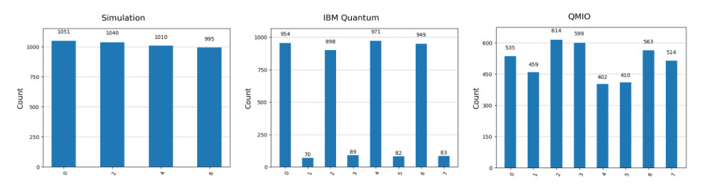
<figcaption class="paper-figure-caption"><b>Fig 1.</b> Figure 1: Measurement distributions for Shor’s algorithm (N = 15, a = 2, k = 3). From left to right: ideal simulation, IBM Quantum hardware results, and QMIO hardware results. The ideal distribution exhibits well-defined peaks corresponding to the order r = 4. On real hardware, noise and decoherence progressively broaden and flatten the distribution, with a more pronounced loss of spectral structure observed on the QMIO device.</figcaption>
</figure>
<figure class="paper-figure-card">
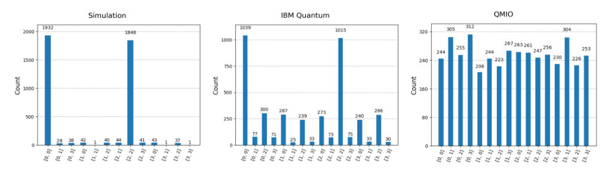
<figcaption class="paper-figure-caption"><b>Fig 2.</b> Figure 2: Measurement distributions for Regev’s factoring algorithm (N = 15, d = 2). From left to right: ideal simulation, IBM Quantum hardware results, and QMIO hardware results. In the ideal case, the distribution exhibits a small set of dominant outcomes consistent with approximate dual lattice sampling. On real hardware, noise and decoherence lead to a more dispersed distribution, with a stronger dilution of geometric structure observed on the QMIO device.</figcaption>
</figure>
</div>

<p><strong>Summary.</strong> This paper experimentally compares Shor's and Regev's quantum factoring algorithms on real NISQ hardware to understand their practical viability. By analyzing measurement distributions using entropy and support size metrics, the authors quantify how hardware noise degrades the distinct information structures required by each algorithm. The results highlight a trade-off between signal concentration and distribution robustness in the current noisy computing era.</p>
<p><strong>Why it may be interesting.</strong> The comparison of information encoding strategies (1D concentration vs. higher-D lattice sampling) under realistic hardware noise provides critical benchmarks for designing fault-tolerant quantum algorithms.</p>
<details>
<summary>Detailed structure</summary>
<p><strong>Main problem.</strong> The study compares the experimental performance and robustness of Shor's quantum factoring algorithm against Regev's alternative on current noisy quantum hardware.</p>
<p><strong>Main result.</strong> While neither algorithm shows a practical advantage for small numbers (N=15), the analysis quantifies how noise degrades information structure, showing distinct failure modes based on whether the required signal is highly concentrated (Shor) or distributed across multiple dimensions (Regev).</p>
<p><strong>Method.</strong> The authors execute both algorithms on real NISQ quantum processors (QMIO, IBM Quantum) and compare measurement statistics against ideal simulations using quantitative metrics like Shannon Entropy, Effective Support Size, and Top-K Mass.</p>
<p><strong>Model / system.</strong> The work uses superconducting or trapped-ion based quantum hardware operating in the Noisy Intermediate Scale Quantum (NISQ) regime. The core computation involves implementing modular exponentiation circuits for factoring N=15.</p>
<p><strong>Key observables.</strong> Shannon Entropy ($H(p)$), Effective Support Size ($   ext{Neff}(p)$), and Top-K Mass ($ ext{M}_4(p)$) derived from measurement probability distributions.</p>
<p><strong>Important parameters / regimes.</strong> Factoring modulus N=15; quantum hardware backends (QMIO, IBM Quantum); circuit depth and noise levels.</p>
<p><strong>Assumptions / limitations.</strong> The success of classical post-processing is directly linked to the measurable concentration or distribution structure in the measurement outcomes; the comparison abstracts away from general arithmetic circuit depth issues.</p>
<p><strong>Figures summary.</strong> Figure 1 visually compares measurement distributions for Shor's algorithm across Ideal, IBM Quantum, and QMIO conditions, showing peak broadening. Figure 2 similarly illustrates dispersion for Regev's algorithm on different backends.</p>
<p><strong>Paper structure.</strong> The paper reviews quantum factoring algorithms (Shor vs. Regev), details the experimental setup using Qiskit on multiple hardware backends, presents quantitative analysis using distribution metrics ($H, 	ext{Neff}, M_4$), and concludes by comparing the noise-induced degradation profiles.</p>
</details>
<details>
<summary>Abstract</summary>
<p>Quantum algorithms for integer factorization represent one of the most prominent applications of quantum computation, with far-reaching implications for modern cryptography. While Shor's algorithm provides a polynomial-time solution in the ideal quantum model, its practical implementation is severely constrained by the limitations of current noisy intermediate-scale quantum (NISQ) hardware. These constraints have motivated the exploration of alternative factoring algorithms with different structural and resource trade-offs.   In this work, we present an experimental study of Regev's quantum factoring algorithm, implemented on real quantum hardware, and compare its behavior with that of Shor's algorithm under analogous conditions. Focusing on the case N = 15, we execute both algorithms on the QMIO quantum computer at the Centro de Supercomputacion de Galicia (CESGA) and contrast the results with one of IBM's open-access quantum computers and ideal simulations. This parallel execution enables a low-level comparison of the two algorithms, highlighting how their respective quantum implementations interact with hardware noise, limited circuit depth, and finite sampling.   Our analysis emphasizes the different ways in which Shor's and Regev's algorithms encode arithmetic structure into quantum states through Fourier sampling in one and higher dimensions, respectively, and how these differences manifest in experimental outcomes. Although neither algorithm demonstrates a practical advantage in the small N regime, the results provide insight into their relative robustness and failure modes on contemporary quantum devices. This study illustrates the value of experimental benchmarking of alternative quantum factoring algorithms as a means of understanding the practical implications of algorithmic design choices in the NISQ era.</p>
</details>
<p><sub><a href="#top">↑ back to top</a></sub></p>

<p><a id="paper-2606.17357"></a></p>
<h3 id="pulse-optimised-circuit-elements-for-scalable-and-noise-resilient-quantum-chemistry"><a href="http://arxiv.org/abs/2606.17357v1">Pulse-optimised circuit elements for scalable and noise-resilient quantum chemistry</a></h3>
<p><strong>Authors:</strong> Henrik Gothen, Christopher K. Long, Djamila Hiller, Yunming Qian, Crispin H. W. Barnes, Normann Mertig, David R. M. Arvidsson-Shukur<br>
<strong>Type:</strong> both · <strong>Category:</strong> quantum information and computing · <strong>PDF:</strong> <a href="https://arxiv.org/pdf/2606.17357v1">https://arxiv.org/pdf/2606.17357v1</a><br>
<strong>Analysis basis:</strong> full PDF text, analyzed in chunks
<strong>Topic relevance:</strong> 🔥 <code>QC/QI experiment</code> <strong>4/5</strong> · <code>analog quantum simulation</code> <strong>1/5</strong> · <code>exotic spin models in light-matter</code> <strong>1/5</strong> · <code>spintronics-quantum-optics interface</code> <strong>1/5</strong></p>
<div class="figure-strip-hint">↔ Scroll figures horizontally</div>
<div class="paper-figures-scroll">
<figure class="paper-figure-card">
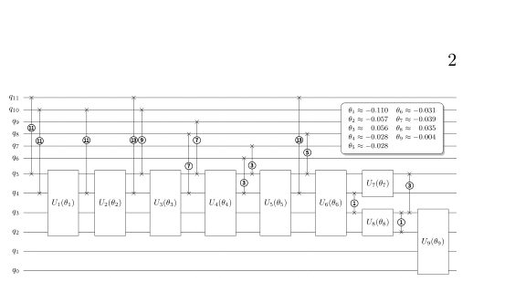
<figcaption class="paper-figure-caption"><b>Fig 1.</b> Figure 1. VQE circuit to prepare an estimate of the LiH ground state. Starting from a 12-qubit Hartree– Fock state, the circuit uses SWAP operations and single- and double-qubit excitations [Eqs. (3) and (4)] to approximate the groundstate of LiH. A classical optimiser is used to fine-tune the excitation strength (θi) of the circuit elements. The cir- cled numbers on the SWAP operations indicate the number of nearest-neighbour SWAP operations required in a linear architecture. The circuit was constructed using numerical simulations of the QEB-ADAPT-VQE algorithm [12].</figcaption>
</figure>
<figure class="paper-figure-card">
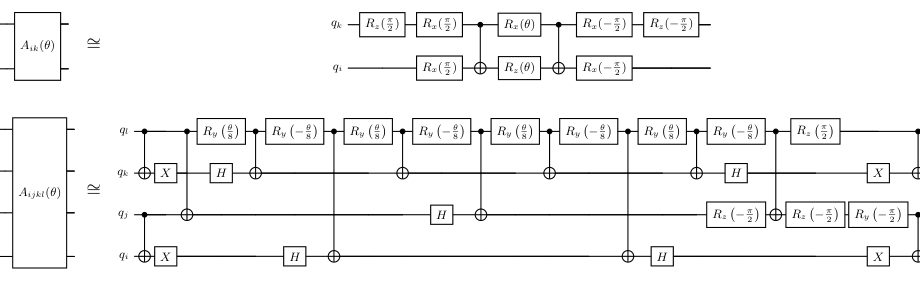
<figcaption class="paper-figure-caption"><b>Fig 2.</b> Figure 2. Decomposition of qubit-excitation elements into primitive gates. The top panel displays the circuit for a single-qubit excitation; the bottom panel displays the circuit for a double-qubit excitation [12]. The qubit-excitation elements require 10 and 34 gates, respectively.</figcaption>
</figure>
<figure class="paper-figure-card">
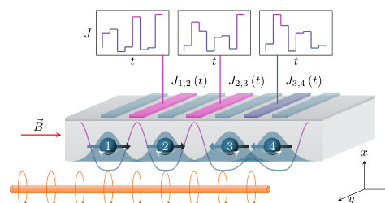
<figcaption class="paper-figure-caption"><b>Fig 3.</b> Figure 3. Schematic of a silicon MOS device. Single- electron spin-qubits (arrows) are confined in Si (light grey) by potential wells (solid curve) created by plunger (semitranspar- ent blue) and barrier gates, also called J-gates (purple/pink) on top of an SiOx layer (dark grey). The J-gates control the potential barriers between electrons, and thus, the exchange interactions. The electrons’ spatial wavefunctions are shown as blue shaded bell curves. Each electron spin is subject to a static, external, magnetic field. A time-dependent magnetic field can be generated by a microwave antenna (orange). The white arrows illustrate the action of the double-qubit excita- tion.</figcaption>
</figure>
<figure class="paper-figure-card">
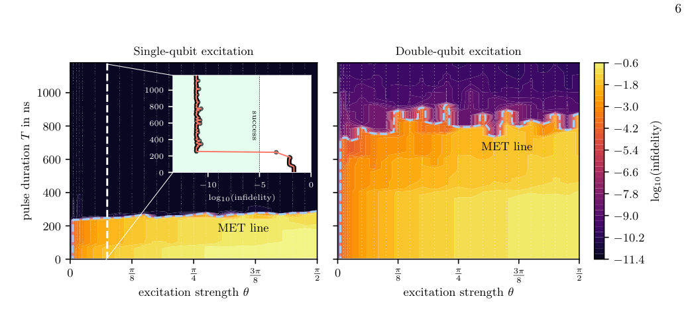
<figcaption class="paper-figure-caption"><b>Fig 4.</b> Figure 4. Performance of pulse-based qubit excitations. Infidelity of a single- (left) and double- (right) qubit excitation plotted as a function of excitation strength θ and pulse duration T. Dark regions indicate (θ, T)-combinations for which we found low-infidelity pulses that approximate a qubit-excitation well. Lighter colours indicate regions of high infidelity, where we were unable to find pulses that approximate qubit excitations. The blue dashed line (where the infidelity equals 10−5) marks the transition between these regions. The inset highlights a vertical cut through our data. Each black dot represents the outcome of the most successful pulse simulation at a fixed T. At large...</figcaption>
</figure>
<figure class="paper-figure-card">
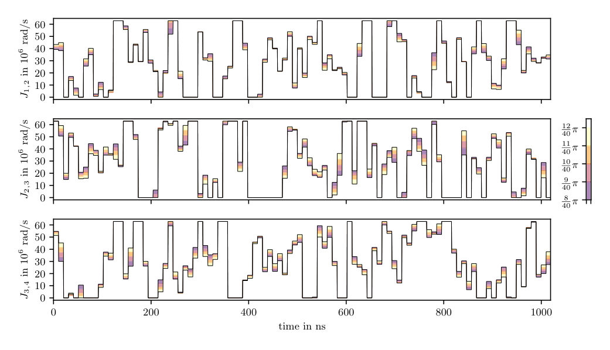
<figcaption class="paper-figure-caption"><b>Fig 5.</b> Figure 5. Pulse shape vs pulse strength. The optimised pulse shapes of double-qubit excitations are plotted for five excitation strengths θ in the interval [ 8</figcaption>
</figure>
</div>

<p><strong>Summary.</strong> The paper presents a novel technique using pulse engineering to drastically speed up fundamental circuit operations required for Variational Quantum Eigensolver (VQE) calculations. By optimizing hardware-specific pulses instead of relying on standard gate sequences, the authors achieve significant run-time reductions (up to 15x). This advancement makes quantum chemistry simulations more feasible and robust against noise on near-term silicon spin-qubit processors.</p>
<p><strong>Why it may be interesting.</strong> This work directly addresses the practical implementation gap in quantum chemistry by providing a concrete, hardware-aware method to accelerate crucial computational steps on solid-state qubits, which is highly relevant for AMO physicists studying open quantum systems dynamics.</p>
<details>
<summary>Detailed structure</summary>
<p><strong>Main problem.</strong> Current quantum chemistry calculations are limited by slow algorithmic runtimes on near-term quantum processors.</p>
<p><strong>Main result.</strong> The authors demonstrated that pulse engineering can accelerate qubit excitations for VQE elements by up to a factor of 15.3 compared to conventional gate-based methods, leading to more noise-robust simulations.</p>
<p><strong>Method.</strong> They developed a methodology using gradient-ascent pulse engineering (GRAPE) to construct hardware-tailored pulses that directly implement required quantum circuit elements, bypassing full circuit optimization.</p>
<p><strong>Model / system.</strong> The work is applied to simulating molecular energy levels using the Variational Quantum Eigensolver (VQE) on a silicon spin-qubit quantum processor. The underlying physics involves electron spin qubits governed by Heisenberg chain Hamiltonians.</p>
<p><strong>Key observables.</strong> Execution times for single- and double-qubit excitations, infidelity ($I$), Minimum Evolution Time ($  ext{MET}$), and the acceleration factor compared to gate-based methods.</p>
<p><strong>Important parameters / regimes.</strong> Excitation strength ($  heta$), pulse duration ($T$), coherence time ($T_2^* \approx 100 \mu    ext{s}$), and target infidelity threshold ($\epsilon$).</p>
<p><strong>Assumptions / limitations.</strong> The methodology assumes that high-fidelity pulses for various excitation strengths can be obtained by interpolating between pre-optimized pulse shapes.</p>
<p><strong>Figures summary.</strong> Figures illustrate the decomposition of required excitations into primitive gates, compare gate-based vs. pulse-based execution times (showing large speedups), and map out the Minimum Excitation Time ($ ext{MET}$) as a function of excitation strength and time.</p>
<p><strong>Paper structure.</strong> The paper first identifies the runtime bottleneck in VQE for quantum chemistry. It then proposes using gradient-ascent pulse engineering to create efficient, hardware-tailored pulses for fundamental qubit excitations (single/double). The core is the numerical demonstration comparing these optimized pulses against standard gate sequences, concluding with scalability analysis.</p>
</details>
<details>
<summary>Abstract</summary>
<p>Useful chemistry calculations on near-term quantum processors are hindered by current algorithmic runtimes. We develop a methodology to significantly reduce these runtimes. Typically, variational quantum eigensolver (VQE) algorithms are implemented as sequences of primitive gates. Our methodology instead relies on gradient-ascent pulse engineering to construct hardware-tailored pulses for the direct implementation of VQEs. As problem sizes increase, it quickly becomes intractable to optimise a pulse that implements an entire VQE ansatz circuit. However, leading VQEs are constructed in a modular fashion. A problem-tailored VQE is assembled from parameterised circuit elements that simulate hopping between two or four electronic spin orbitals. We show that these circuit elements can be implemented more efficiently using hardware-tailored pulses. We numerically demonstrate our methodology on a silicon spin-qubit quantum processor. We find that common circuit elements, known as single- and double-qubit excitations, can be implemented in less than 289 ns and 927 ns, respectively. Compared with conventional gate-based implementations, our pulse-accelerated qubit excitations provide a scalable approach for faster and therefore more noise-robust quantum chemistry simulations by reducing VQE runtimes by up to a factor of 15.3.</p>
</details>
<p><sub><a href="#top">↑ back to top</a></sub></p>

<p><a id="paper-2606.17960"></a></p>
<h3 id="average-entropy-of-bogoliubov-kubo-mori-random-state-ensemble"><a href="http://arxiv.org/abs/2606.17960v1">Average entropy of Bogoliubov-Kubo-Mori random state ensemble</a></h3>
<p><strong>Authors:</strong> Sohail, Lu Wei<br>
<strong>Type:</strong> theory · <strong>Category:</strong> quantum information and computing · <strong>PDF:</strong> <a href="https://arxiv.org/pdf/2606.17960v1">https://arxiv.org/pdf/2606.17960v1</a><br>
<strong>Analysis basis:</strong> full PDF text, analyzed in chunks
<strong>Topic relevance:</strong> 🔥 <code>entanglement &amp; information structure</code> <strong>4/5</strong> · <code>Keldysh / 2PI / non-Gaussian methods</code> <strong>1/5</strong></p>
<div class="figure-strip-hint">↔ Scroll figures horizontally</div>
<div class="paper-figures-scroll">
<figure class="paper-figure-card">
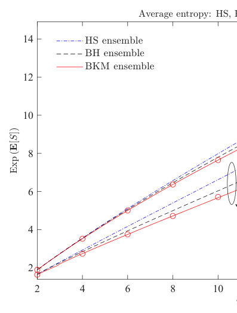
<figcaption class="paper-figure-caption"><b>Fig 1.</b> Fig. 1 Average entropy comparison: the dash-dot lines, dash lines, and solid lines are respectively drawn using exact formulas of HS ensemble in (A5), BH ensemble in (A8), and BKM ensemble in (10). The circles represent numerical simulations of BKM ensemble.</figcaption>
</figure>
</div>

<p><strong>Summary.</strong> This work develops a theoretical framework to calculate the average entanglement entropy for various random state ensembles, focusing on the Bogoliubov-Kubo-Mori (BKM) ensemble. By deriving an exact formula based on spectral moments and special functions, the authors establish quantitative relationships between different measures of quantum randomness. This advances the understanding of how geometric metrics influence entanglement quantification in quantum systems.</p>
<p><strong>Why it may be interesting.</strong> The rigorous mathematical derivation of entanglement measures for random states, especially using advanced tools like polygamma functions, provides quantitative benchmarks for quantum information theory.</p>
<details>
<summary>Detailed structure</summary>
<p><strong>Main problem.</strong> The study focuses on deriving an exact, explicit formula for the average entanglement entropy of a random state ensemble induced using the Bogoliubov-Kubo-Mori (BKM) metric.</p>
<p><strong>Main result.</strong> An exact formula for the average entanglement entropy $\mathbb{E}[S]$ over the BKM ensemble is derived, showing it generates the least average entropy among compared ensembles for finite dimensions.</p>
<p><strong>Method.</strong> The calculation involves deriving average spectral moments ($\mathbb{E}[R_l]$) using properties of the unconstrained ensemble and relating the average entropy $\mathbb{E}[S]$ to an induced entropy $\mathbb{E}[T]$ via a specific lemma involving polygamma functions.</p>
<p><strong>Model / system.</strong> The system is a bipartite quantum system described by an $m \times m$ density matrix $\rho$, and the entanglement measure used is the von Neumann entropy, $S = -\text{tr}(\rho \ln \rho)$. The analysis compares three random state ensembles: BKM, Hilbert-Schmidt (HS), and Bures-Hall (BH).</p>
<p><strong>Key observables.</strong> Average entanglement entropy ($\mathbb{E}[S]$) and average spectral moments ($\mathbb{E}[R_l]$).</p>
<p><strong>Important parameters / regimes.</strong> System dimension ($m$), parameter $\alpha$, and the related constant $\beta$.</p>
<p><strong>Assumptions / limitations.</strong> The derivation of $\mathbb{E}[R_l]$ relies only on the density function without using its correlation kernel, which is noted as a technical advance.</p>
<p><strong>Figures summary.</strong> Figure 1 compares the calculated average entropy for HS, BH, and BKM ensembles against numerical simulation results.</p>
<p><strong>Paper structure.</strong> The paper builds by first establishing the framework of random state ensembles, deriving the normalization constant $C(\alpha)$ using Wronskian structure, calculating the average spectral moments $\mathbb{E}[R_l]$, and finally presenting the explicit formula for the average induced entropy $\mathbb{E}[T]$ (and thus $\mathbb{E}[S]$).</p>
</details>
<details>
<summary>Abstract</summary>
<p>Random states play a foundational role in different branches of modern quantum science. In this work, we study a recently proposed random state ensemble induced from von Neumann entropy through the Bogoliubov-Kubo-Mori (BKM) metric. In particular, we derive an exact yet explicit formula of average entanglement entropy over BKM ensemble. In obtaining the formula, we only make use of properties of normalization constant of the ensemble in the absence of its correlation kernel, contrary to average entropy computation of other ensembles. This new framework paves the way for calculating higher-order cumulants of BKM ensemble beyond the average.</p>
</details>
<p><sub><a href="#top">↑ back to top</a></sub></p>

<p><a id="paper-2606.17685"></a></p>
<h3 id="coherent-control-of-an-embedded-bound-state-without-a-spectral-gap"><a href="http://arxiv.org/abs/2606.17685v1">Coherent Control of an Embedded Bound State Without a Spectral Gap</a></h3>
<p><strong>Authors:</strong> Yue Chang<br>
<strong>Type:</strong> theory · <strong>Category:</strong> other · <strong>PDF:</strong> <a href="https://arxiv.org/pdf/2606.17685v1">https://arxiv.org/pdf/2606.17685v1</a><br>
<strong>Analysis basis:</strong> full PDF text, analyzed in chunks
<strong>Topic relevance:</strong> <code>analog quantum simulation</code> <strong>3/5</strong> · <code>correlated cavity matter</code> <strong>3/5</strong> · <code>driven-dissipative phase transition</code> <strong>3/5</strong> · <code>methods for driven-dissipative</code> <strong>3/5</strong> · <code>Tavis-Cummings &amp; cavity-many-emitter</code> <strong>2/5</strong> · <code>non-equilibrium dynamics</code> <strong>2/5</strong> · <code>Keldysh / 2PI / non-Gaussian methods</code> <strong>1/5</strong> · <code>correlated / nonlocal dissipation</code> <strong>1/5</strong> · <code>non-equilibrium universality</code> <strong>1/5</strong></p>
<div class="figure-strip-hint">↔ Scroll figures horizontally</div>
<div class="paper-figures-scroll">
<figure class="paper-figure-card">
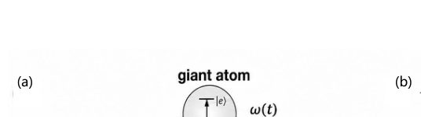
<figcaption class="paper-figure-caption"><b>Fig 1.</b> FIG. 1. Two-knob temporal control of a giant-atom BIC. (a) A two-level giant atom couples to a one-dimensional waveguide at two spatially separated points z1 and z2, with separation d = z2 −z1. For the BIC, the photonic component is confined between the two coupling points. The coupling strength V (t) and the atomic frequency ω(t) provide independent control knobs. (b) Control protocol. Detuning modulation ω(t) dynamically breaks and restores the destructive-interference condition, enabling capture of an incoming single-photon wavepacket into the BIC and release into an outgoing photon. Coupling modulation V (t), in contrast, preserves the BIC condition and adiabatically reshapes the stored...</figcaption>
</figure>
<figure class="paper-figure-card">
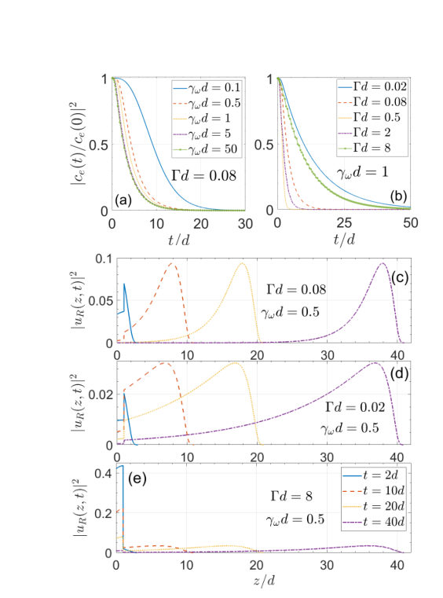
<figcaption class="paper-figure-caption"><b>Fig 2.</b> FIG. 2. Release of the BIC by detuning modulation. (a) Decay of the normalized atomic population |ce (t) /ce(0)|2 for different detuning ramp rates γω, with fixed atom-waveguide coupling Γd = 0.08. (b) Decay of |ce (t) /ce(0)|2 for different coupling strengths Γ, with fixed ramp rate γωd = 1. The release is nonmonotonic in Γ because stronger coupling en- hances both radiative emission and delayed feedback from the confined photonic component. (c)-(e) Right-propagating out- put intensity |uR (z, t)|2 at different times, for fixed γωd = 0.5 and several values of Γ. At long times, after the stored exci- tation has been fully emitted into the waveguide, the output field becomes continuous.</figcaption>
</figure>
<figure class="paper-figure-card">
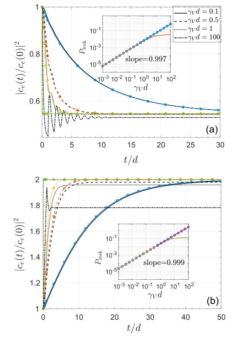
<figcaption class="paper-figure-caption"><b>Fig 3.</b> FIG. 3. Adiabatic control of the BIC. (a),(b) Normal- ized atomic population |ce(t)/ce(0)|2 during coupling mod- ulation V (t) = V0 + ∆V (1 −e−γV t), for (a) ∆V √</figcaption>
</figure>
</div>

<p><strong>Summary.</strong> This paper presents a method to coherently control an embedded bound state (BIC) in a giant atom coupled to a waveguide, overcoming the limitation that BICs lack spectral gap protection. By employing two temporal control knobs—frequency and coupling modulation—the authors show that deterministic single-photon memory operation is possible through adiabatic evolution, with leakage scaling linearly rather than quadratically with the ramp rate.</p>
<p><strong>Why it may be interesting.</strong> This work directly addresses fundamental issues in open quantum systems by providing a robust protocol to manipulate dark states (BICs) without relying on the standard protection mechanism of spectral gaps, which is highly relevant for photonic quantum information processing.</p>
<details>
<summary>Detailed structure</summary>
<p><strong>Main problem.</strong> The challenge is achieving coherent control of an embedded bound state (BIC) that lacks a spectral gap, which limits its use as a reliable quantum memory in open photonic systems.</p>
<p><strong>Main result.</strong> The authors demonstrate that adiabatic control is possible even without a spectral gap, showing the intrinsic leakage probability scales linearly with the ramp rate ($    ext{P}_{    ext{leak}} \propto \gamma$).</p>
<p><strong>Method.</strong> The study uses theoretical modeling involving time-dependent Hamiltonian evolution and analyzing nonadiabatic coupling effects in waveguide QED.</p>
<p><strong>Model / system.</strong> The system is a minimal two-point giant atom coupled to a bidirectional one-dimensional photonic waveguide. Control is achieved by modulating the atomic frequency ($\omega(t)$) or the atom-waveguide coupling strength ($V(t)$).</p>
<p><strong>Key observables.</strong> Normalized atomic population $|c_e(t)/c_e(0)|^2$ and outgoing right-propagating photonic intensities $|	ilde{u}_R(z, t)|^2$.</p>
<p><strong>Important parameters / regimes.</strong> The ramp rate ($\gamma$) of the control knobs (detuning or coupling modulation) is critical; the linear scaling $    ext{P}_{    ext{leak}} \propto \gamma$ is key.</p>
<p><strong>Assumptions / limitations.</strong> The analysis relies on treating nonadiabatic coupling perturbatively and assumes perfect mode-matching for initial photon capture.</p>
<p><strong>Figures summary.</strong> Figures illustrate the two-knob control mechanism, showing atomic population decay rates versus detuning ramp rate ($\gamma\omega$) or coupling strength ($\Gamma$), and demonstrating the outgoing photonic wavefunctions' dependence on $\Gamma$.</p>
<p><strong>Paper structure.</strong> The paper introduces the BIC system and its limitations. It then details using two temporal control knobs—atomic-frequency modulation for capture/release, and coupling modulation for gapless tuning. The core results focus on proving adiabaticity despite the lack of a spectral gap.</p>
</details>
<details>
<summary>Abstract</summary>
<p>Bound states in the continuum (BICs) can confine photonic excitations in open systems without conventional cavities or band gaps, making them natural candidates for long-lived quantum storage and single-photon control. Their use is limited, however, by two obstacles: they are dark to incident photons, and they lack spectral-gap protection from the surrounding continuum. We overcome both limitations in a giant atom coupled to a one-dimensional waveguide using two temporal control knobs. Atomic-frequency modulation breaks and restores the destructive-interference condition, enabling deterministic capture and release of mode-matched single photons. Coupling modulation instead preserves the BIC condition while tuning the atomic and photonic weights of the stored state. A key result is that this embedded state can nevertheless be controlled adiabatically despite the absence of a spectral gap, with an intrinsic leakage probability linear in the ramp rate. By separating radiative access from BIC-preserving deformation, the protocol turns a dark BIC into a single-photon memory whose fidelity is set by the intrinsic continuum-induced leakage law, providing a route to embedded-state control in open photonic platforms.</p>
</details>
<p><sub><a href="#top">↑ back to top</a></sub></p>

<p><a id="paper-2606.17881"></a></p>
<h3 id="finite-and-disordered-kitaev-chains-a-large-deviation-study"><a href="http://arxiv.org/abs/2606.17881v1">Finite and disordered Kitaev chains: a large deviation study</a></h3>
<p><strong>Authors:</strong> Clément Fortin, Kai Wang, Tami Pereg-Barnea<br>
<strong>Type:</strong> theory · <strong>Category:</strong> disordered systems and neural networks · <strong>PDF:</strong> <a href="https://arxiv.org/pdf/2606.17881v1">https://arxiv.org/pdf/2606.17881v1</a><br>
<strong>Analysis basis:</strong> full PDF text, analyzed in chunks
<strong>Topic relevance:</strong> <code>analog quantum simulation</code> <strong>3/5</strong> · <code>methods for driven-dissipative</code> <strong>3/5</strong> · <code>Keldysh / 2PI / non-Gaussian methods</code> <strong>2/5</strong> · <code>driven-dissipative phase transition</code> <strong>2/5</strong> · <code>non-equilibrium universality</code> <strong>2/5</strong> · <code>Kondo &amp; dissipative impurity</code> <strong>1/5</strong> · <code>correlated / nonlocal dissipation</code> <strong>1/5</strong> · <code>entanglement &amp; information structure</code> <strong>1/5</strong> · <code>exotic spin models in light-matter</code> <strong>1/5</strong> · <code>non-equilibrium dynamics</code> <strong>1/5</strong></p>
<div class="figure-strip-hint">↔ Scroll figures horizontally</div>
<div class="paper-figures-scroll">
<figure class="paper-figure-card">
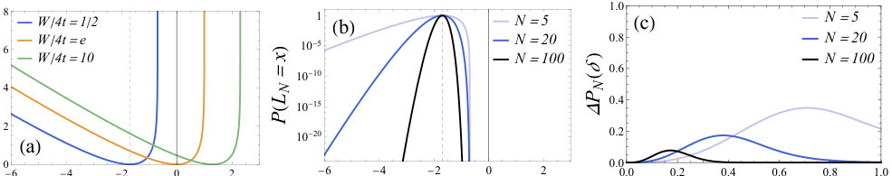
<figcaption class="paper-figure-caption"><b>Fig 1.</b> FIG. 1: (a) The rate function of the MZM’s Lyapunov exponent in the static fermionic Kitaev chain at t = ∆for different disorder strengths W of the chemical potentials µn. The disorder distribution is uniform in [0, W]. The topological phase transition happens at W/4t = e when the minimum of I(x) sits at x = 0. (b) LDP approximation of the probability distribution of the MZM’s Lyapunov exponent LN = x at t = ∆when W/4t = 1/2 for different system sizes. (c) Asymmetric measure of the distributions in (b) as a function of distance δ from the maximum L∞ of the distributions, see Eq. (10). The dashed lines in (a)-(b) are at the thermodynamic value x = L∞.</figcaption>
</figure>
<figure class="paper-figure-card">
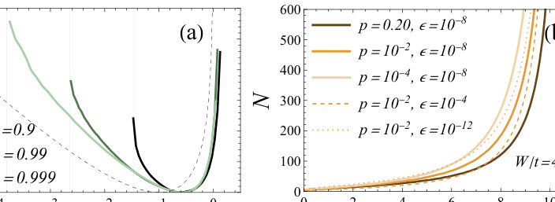
<figcaption class="paper-figure-caption"><b>Fig 2.</b> FIG. 2: (a) Numerical estimation of the rate function governing the fluctuations of the MZM’s Lyapunov exponent for different values of ∆/t. To estimate I(x), we generate 107 disordered Kitaev chains of N = 5 sites with uniformly sampled chemical potentials µn ∈[−W/2, W/2] and W/t = 4. We extract the Lyapunov exponent of each chain from the largest singular value σ1 of the matrix product T A 5 · · · T A 1 (where T A n is defined in Eq. (5)) by setting LN = 1 N ln(σ1). We bin the values of LN and normalize the resulting histogram. We estimate the value of the rate function in each of these bins xi of height P(xi) as I(xi) = −1</figcaption>
</figure>
<figure class="paper-figure-card">
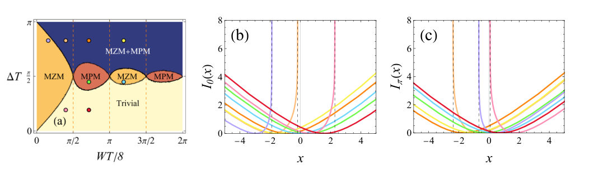
<figcaption class="paper-figure-caption"><b>Fig 3.</b> FIG. 3: (a) Topological phase diagram for the driven Kitaev chain at t = ∆with disordered chemical potentials uniformly sampled µn ∈[−W/2, W/2] and infinite system size N →∞. The chain hosts an MZM (MPM) when the Lyapunov exponent L(0) ∞&lt; 0 (L(π) ∞&lt; 0). The topological phase is thus determined by looking at which of L(0/π) ∞ in Eq. (14) is negative. For numerical purposes, we took a system size of N = 105 sites. The orange vertical dashed lines correspond to WT/8 = nπ/2. (b)–(c) The rate functions of the Lyapunov exponents computed numerically at parameter values corresponding to the colored points in (a) for the MZM (b) and the MPM (c). When WT/8 &gt; π/2, the rate functions I(0/π) lose their...</figcaption>
</figure>
<figure class="paper-figure-card">
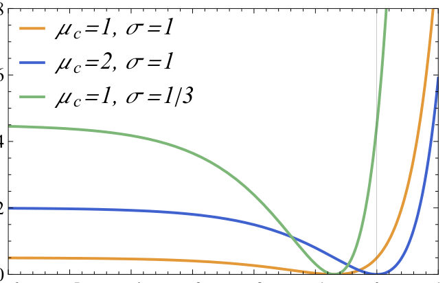
<figcaption class="paper-figure-caption"><b>Fig 4.</b> FIG. 1: Rate function given in Eq. (24) of the Lyapunov exponent LN when the chemical potentials are distributed according to the Gaussian N(µc, σ2) for different values of mean µc and standard deviation σ.</figcaption>
</figure>
</div>

<p><strong>Summary.</strong> This work applies Large Deviations Theory to analyze the fluctuations of Lyapunov exponents governing Majorana edge modes in disordered Kitaev chains. The key finding is that these fluctuations exhibit a measurable asymmetry, which grants an additional protection mechanism to topological states against disorder. This provides new theoretical tools for assessing the stability and required size of quantum devices based on topological properties.</p>
<p><strong>Why it may be interesting.</strong> The discovery of an inherent fluctuation asymmetry that enhances topological protection is a powerful theoretical result for understanding robustness in quantum materials, providing quantitative metrics beyond simple phase diagrams.</p>
<details>
<summary>Detailed structure</summary>
<p><strong>Main problem.</strong> The study investigates finite-size effects of topologically protected edge states, specifically analyzing fluctuations beyond the Central Limit Theorem in disordered quantum chains.</p>
<p><strong>Main result.</strong> The fluctuation statistics of the Lyapunov exponent are found to be fundamentally asymmetric, providing an additional protection mechanism for topological edge states against disorder strength.</p>
<p><strong>Method.</strong> The analysis heavily relies on Large Deviations Theory (LDT) to derive rate functions ($I(x)$) that characterize the probability decay of deviations from the mean Lyapunov exponent.</p>
<p><strong>Model / system.</strong> The primary model is the disordered Kitaev chain, analyzed in both static and periodically driven regimes. The system supports Majorana zero modes (MZMs) at its edges.</p>
<p><strong>Key observables.</strong> Lyapunov exponent ($L_N$), Rate Function ($I(x)$), Asymmetry measure ($\Delta P_N(\delta)$), Minimum required system size ($N$).</p>
<p><strong>Important parameters / regimes.</strong> Disorder strength ($W$), System size ($N$), Coupling constants ($t, \Delta$), Driving frequency ($\Omega$ or $T$).</p>
<p><strong>Assumptions / limitations.</strong> The disorder potentials ($\mu_n$) are assumed to be independent and identically distributed (i.i.d.), and the analysis often relies on power-law behavior of the probability density function near specific points.</p>
<p><strong>Figures summary.</strong> Figures illustrate the rate function $I(x)$ showing characteristic asymmetries, phase diagrams mapping MZM/MPM hosting regions based on Lyapunov signs, and plots detailing how asymmetry is suppressed or restored by changing parameters like disorder strength ($W$) relative to critical values.</p>
<p><strong>Paper structure.</strong> The paper progresses from establishing the general framework using LDT for Lyapunov exponents in disordered systems. It then applies this theory sequentially to the static Kitaev chain, followed by the driven (Floquet) Kitaev chain, analyzing how asymmetry arises and changes based on disorder strength relative to driving parameters.</p>
</details>
<details>
<summary>Abstract</summary>
<p>Topological edge states are celebrated for their robustness against disorder, yet the interplay between disorder and system size remains poorly understood. We use large deviations theory as a framework to study finite-size effects beyond the central limit theorem. We analyze Lyapunov exponent fluctuations in the static and periodically driven disordered Kitaev chain and find an asymmetry in the large deviations statistics that makes stronger edge localizations of Majorana zero modes exponentially more likely than weaker ones. We demonstrate that this fluctuation asymmetry is not tied to the topological phase. This asymmetry endows topological edge states with an additional protection against disorder and persists across a broad class of disorder distribution. We show how to use our framework to find the minimum system size required to satisfy topological quantum computing constraints.</p>
</details>
<p><sub><a href="#top">↑ back to top</a></sub></p>

<p><a id="paper-2606.17251"></a></p>
<h3 id="post-selection-probability-and-fidelity-of-bidirectional-teleportation"><a href="http://arxiv.org/abs/2606.17251v1">Post-Selection Probability and Fidelity of Bidirectional Teleportation</a></h3>
<p><strong>Authors:</strong> Ning Sun, Lei Feng, Pengfei Zhang<br>
<strong>Type:</strong> theory · <strong>Category:</strong> quantum information and computing · <strong>PDF:</strong> <a href="https://arxiv.org/pdf/2606.17251v1">https://arxiv.org/pdf/2606.17251v1</a><br>
<strong>Analysis basis:</strong> full PDF text, analyzed in chunks
<strong>Topic relevance:</strong> <code>entanglement &amp; information structure</code> <strong>3/5</strong> · <code>non-equilibrium dynamics</code> <strong>3/5</strong> · <code>analog quantum simulation</code> <strong>2/5</strong> · <code>methods for driven-dissipative</code> <strong>2/5</strong> · <code>non-equilibrium universality</code> <strong>2/5</strong> · <code>Keldysh / 2PI / non-Gaussian methods</code> <strong>1/5</strong> · <code>correlated / nonlocal dissipation</code> <strong>1/5</strong> · <code>driven-dissipative phase transition</code> <strong>1/5</strong> · <code>scars &amp; prethermalization</code> <strong>1/5</strong></p>
<div class="figure-strip-hint">↔ Scroll figures horizontally</div>
<div class="paper-figures-scroll">
<figure class="paper-figure-card">
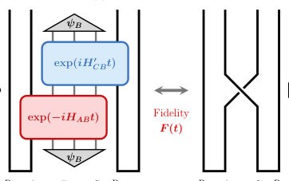
<figcaption class="paper-figure-caption"><b>Fig 1.</b> FIG. 1. The schematic illustration of the bidirectional tele- portation protocol between systems A and C, with reference qubits RA and RC. Here, we allow for errors between the forward and backward evolution Hamiltonians, denoted as H and H′, respectively. It has been established that, un- der scrambled evolution with perfectly reversed dynamics, the protocol provides a probabilistic realization of the SWAP op- eration between A and C systems. The two central quantities governing the protocol are the post-selection probability p(t) and the fidelity of the resulting quantum state F(t).</figcaption>
</figure>
<figure class="paper-figure-card">
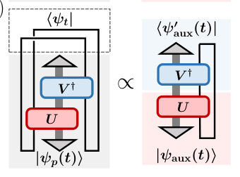
<figcaption class="paper-figure-caption"><b>Fig 2.</b> FIG. 2. The diagrammatic proof of the main relations: (1) between the probability and the subsystem echo, p(t) = LB(t), and (2) between the fidelity and the Loschmidt echo, F(t)p(t) = 2−2NL(t). Here, the overall factor arises from the normalization of the EPR state, which is omitted in the diagrammatic representation. For conciseness, we introduce unitary evolutions U = e−iHABt and V = e−iH′ ABt, and rep- resent the qubits in B by a single thick solid line. The red slash indicates periodic boundary conditions.</figcaption>
</figure>
<figure class="paper-figure-card">
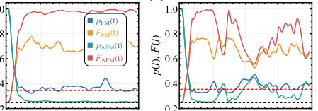
<figcaption class="paper-figure-caption"><b>Fig 3.</b> FIG. 3. We present the numerical results for the quantum Ising model in the absence of errors in the backward evolution. We fix N = 1, M = 8, and g/J = 1.05, and consider (a) h = 0.5 (chaotic [11, 18]) and (b) h = 0 (integrable). We present the post-selection probability and the fidelity as functions of time t for both ferromagnetic and antiferromagnetic initial states, denoted as FM and AFM, respectively. The dashed lines represent the theoretical prediction p(t) = e−sth/2, as described in the main text.</figcaption>
</figure>
<figure class="paper-figure-card">
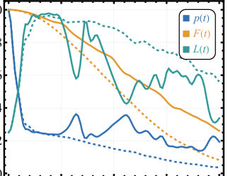
<figcaption class="paper-figure-caption"><b>Fig 4.</b> FIG. 4. We present the numerical results for the quantum Ising model with an error ϵ = 0.05. We fix N = 1, M = 8, and g/J = 1.05, and consider the antiferromagnetic initial state. The solid lines correspond to the integrable case with h = 0, while the dashed lines represent the chaotic case with h = 0.5.</figcaption>
</figure>
</div>

<p><strong>Summary.</strong> This paper analyzes a bidirectional teleportation protocol by relating its success metrics—post-selection probability and fidelity—to established measures of quantum dynamics, such as the Loschmidt echo. The key finding is that integrable Hamiltonians provide superior stability against errors in time-reversed evolution compared to chaotic systems. This offers practical guidance for implementing quantum protocols on realistic hardware.</p>
<p><strong>Why it may be interesting.</strong> This work bridges quantum information processing protocols with fundamental concepts of quantum chaos and thermalization diagnostics (Loschmidt echo). Showing that integrability enhances robustness against time-reversal errors is highly relevant for designing fault-tolerant quantum devices.</p>
<details>
<summary>Detailed structure</summary>
<p><strong>Main problem.</strong> The study characterizes the performance of a bidirectional quantum teleportation protocol designed to perform a digital SWAP operation, focusing on how errors in time-reversed dynamics affect key metrics.</p>
<p><strong>Main result.</strong> The post-selection probability and fidelity can be related directly to standard quantum dynamics diagnostics like the subsystem Loschmidt echo. Crucially, integrable models are shown to maintain higher performance (larger post-selection probability) compared to chaotic ones when errors are present.</p>
<p><strong>Method.</strong> Theoretical derivation establishing relationships between protocol metrics ($p(t), F(t)$) and dynamical measures ($  ext{L}_B(t),    ext{L}(t)$). Numerical simulations were used on the quantum Ising model to validate these theoretical connections.</p>
<p><strong>Model / system.</strong> The system involves a bidirectional teleportation protocol acting on three subsystems (A, B, C) using chaotic Hamiltonian evolution. The analysis is tested using the Quantum Ising model Hamiltonian, which can be tuned between integrable and chaotic regimes.</p>
<p><strong>Key observables.</strong> Post-selection probability ($p(t)$), Fidelity ($F(t)$), Loschmidt Echo ($    ext{L}(t)$), Subsystem Loschmidt Echo ($    ext{L}_B(t)$).</p>
<p><strong>Important parameters / regimes.</strong> Time evolution $t$, error strength $\epsilon$, and the Hamiltonian parameters (e.g., coupling constants $J, g, h$) determining integrability vs. chaos.</p>
<p><strong>Assumptions / limitations.</strong> The analysis relies on relating protocol performance to established quantum dynamics diagnostics; specific results are derived for both errorless and noisy time-reversed dynamics.</p>
<p><strong>Figures summary.</strong> Figure 1 schematically illustrates the teleportation protocol. Figure 2 diagrammatically proves the relationships between $p(t)$, $   ext{L}_B(t)$, and $F(t)$ versus $  ext{L}(t)$. Figure 3 shows numerical results for the errorless Ising model, comparing initial states. Figure 4 compares performance with errors ($\epsilon=0.05$) for integrable vs. chaotic dynamics.</p>
<p><strong>Paper structure.</strong> The paper first introduces the bidirectional teleportation protocol and defines the key quantities ($p(t), F(t)$). It then derives theoretical relationships connecting these quantities to Loschmidt echoes. The analysis is applied to the Ising model, comparing errorless (chaotic vs. integrable) and noisy scenarios to draw conclusions about practical implementation.</p>
</details>
<details>
<summary>Abstract</summary>
<p>Understanding the scrambling of quantum information is central to many areas of quantum physics, including quantum thermalization, entanglement growth, and quantum information processing. Insights from these studies have, in turn, inspired the development of novel quantum protocols and algorithms. Recently, a bidirectional teleportation protocol was proposed to implement a digital SWAP operation between qubits by leveraging chaotic Hamiltonian evolution combined with measurement and post-selection. In this work, we provide a comprehensive study of two central quantities that characterize the protocol, the post-selection probability and the fidelity, taking into account possible errors in time-reversed dynamics. We show that these quantities can be expressed in terms of standard diagnostics in quantum dynamics, including the Loschmidt echo and its subsystem variant. The results unveil (1) the initial-state dependence of the fidelity and (2) the stability of the post-selection probability in integrable models. Our findings offer practical guidance for the implementation of the protocol on realistic quantum devices.</p>
</details>
<p><sub><a href="#top">↑ back to top</a></sub></p>

<p><a id="paper-2606.17264"></a></p>
<h3 id="coupled-mode-equations-with-arbitrary-mode-combinations-for-kinetic-inductance-superconducting-traveling-wave-parametric-devices-theory-and-experimental-validation"><a href="http://arxiv.org/abs/2606.17264v1">Coupled-Mode Equations with Arbitrary Mode Combinations for Kinetic-Inductance Superconducting Traveling-Wave Parametric Devices: Theory and Experimental Validation</a></h3>
<p><strong>Authors:</strong> F. Patricio Mena, Camilo Espinoza, Ryan O. Berriel, Ricardo Finger, David J. Thoen<br>
<strong>Type:</strong> both · <strong>Category:</strong> other · <strong>PDF:</strong> <a href="https://arxiv.org/pdf/2606.17264v1">https://arxiv.org/pdf/2606.17264v1</a><br>
<strong>Analysis basis:</strong> full PDF text, analyzed in chunks
<strong>Topic relevance:</strong> <code>driven-dissipative phase transition</code> <strong>3/5</strong> · <code>methods for driven-dissipative</code> <strong>3/5</strong> · <code>analog quantum simulation</code> <strong>2/5</strong> · <code>non-equilibrium dynamics</code> <strong>2/5</strong> · <code>non-equilibrium universality</code> <strong>2/5</strong> · <code>Keldysh / 2PI / non-Gaussian methods</code> <strong>1/5</strong> · <code>correlated / nonlocal dissipation</code> <strong>1/5</strong> · <code>entanglement &amp; information structure</code> <strong>1/5</strong></p>
<div class="figure-strip-hint">↔ Scroll figures horizontally</div>
<div class="paper-figures-scroll">
<figure class="paper-figure-card">
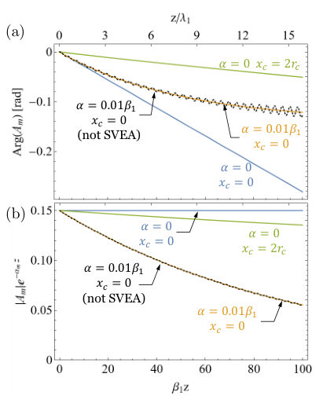
<figcaption class="paper-figure-caption"><b>Fig 1.</b> FIG. 2. Simulation results for one traveling mode, N = 1. (a) Phase and (b) amplitude. Three</figcaption>
</figure>
<figure class="paper-figure-card">
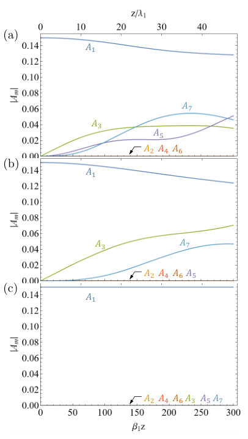
<figcaption class="paper-figure-caption"><b>Fig 2.</b> FIG. 3. Simulation results for harmonic generation with N = 7 (ωn = nω1). For the simulations</figcaption>
</figure>
<figure class="paper-figure-card">
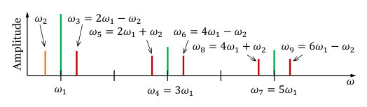
<figcaption class="paper-figure-caption"><b>Fig 3.</b> FIG. 4. Cartoon of the degenerate FWM with higher-order effects. Specifically, two harmonics</figcaption>
</figure>
<figure class="paper-figure-card">
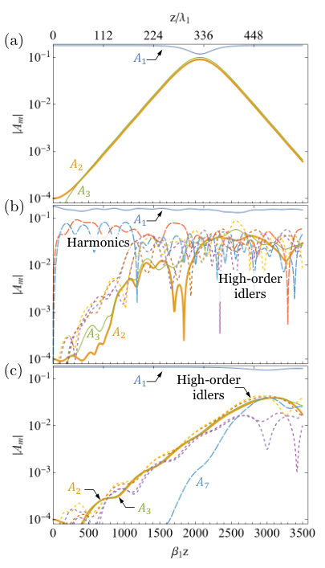
<figcaption class="paper-figure-caption"><b>Fig 4.</b> FIG. 5. Simulation results for FWM (pump, ω1, signal, ω2, idler, ω3) with two harmonics (ω4, ω7)</figcaption>
</figure>
<figure class="paper-figure-card">
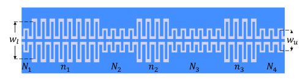
<figcaption class="paper-figure-caption"><b>Fig 5.</b> FIG. 6. Schematics of the unit cell of the CPW DE line used in this work. Three loads, ni, are</figcaption>
</figure>
</div>

<p><strong>Summary.</strong> This work presents an advanced theoretical framework using Coupled-Mode Equations (CMEs) to model parametric processes in superconducting transmission lines, systematically accounting for losses. The theory is rigorously validated by comparing simulations against microwave measurements of harmonic generation. The key finding confirms that the device's nonlinearity scales with its intrinsic depairing current, providing a robust tool for designing high-performance quantum/classical superconducting devices.</p>
<p><strong>Why it may be interesting.</strong> While focused on superconductivity/microwave physics, the underlying mathematical structure—the use of coupled differential equations to describe energy exchange between multiple interacting modes in a nonlinear medium—is highly analogous to models used in quantum optics and open quantum systems theory.</p>
<details>
<summary>Detailed structure</summary>
<p><strong>Main problem.</strong> To develop a general theoretical framework using Coupled-Mode Equations (CMEs) that accurately models parametric processes in superconducting traveling-wave devices, specifically incorporating losses and arbitrary combinations of interacting waves.</p>
<p><strong>Main result.</strong> The authors successfully derived a generalized CME formulation validated by experimental measurements showing excellent agreement for harmonic generation. Crucially, the nonlinear parameter scales with the intrinsic depairing current rather than the measured critical current.</p>
<p><strong>Method.</strong> The methodology combines theoretical derivation using projection methods on telegrapher's equations to yield CMEs, followed by rigorous validation through microwave measurements of $S_{21}$ variation and harmonic generation.</p>
<p><strong>Model / system.</strong> The system is a superconducting CPW-based artificial transmission line exhibiting quadratic nonlinearity in its inductance. The model uses CMEs to describe the spatial evolution of multiple interacting wave amplitudes ($A_m$) across different frequency modes.</p>
<p><strong>Key observables.</strong> Signal gain, harmonic generation power ratios ($P_B/P_A$), relative phase variation of $S_{21}$ with DC current, and the nonlinear parameter $I'_*$.</p>
<p><strong>Important parameters / regimes.</strong> $I'_*$ (nonlinear parameter), $I_{	ext{dep}}$ (theoretical depairing current), $\gamma_m$ (propagation constant), and characteristic impedance ($Z_{Cm}$).</p>
<p><strong>Assumptions / limitations.</strong> The primary assumptions involve treating the current as a superposition of plane waves, using the Slowly-Varying Envelope Approximation (SVEA) for simplification, and assuming the general CME structure holds despite losses.</p>
<p><strong>Figures summary.</strong> Figures illustrate the theoretical model's applicability across various mode combinations (e.g., harmonic generation), show measured $S_{21}$ vs. DC current data fitted by the theory, and present simulated/measured power flow for multiple harmonics.</p>
<p><strong>Paper structure.</strong> The paper progresses from establishing the need to generalize CMEs for lossy superconducting systems, deriving the general CME formulation applicable to any mode combination, detailing specific physical examples (harmonic generation, FWM), and finally validating this comprehensive model using detailed microwave measurements on a fabricated sample.</p>
</details>
<details>
<summary>Abstract</summary>
<p>The coupled-mode equations (CMEs) have proven very successful in describing parametric processes in nonlinear optics. More recently, the same formulation has been used to model microwave superconducting parametric amplifiers and frequency multipliers. However, when applied to the microwave regime, not all assumptions remain valid and losses play a more dramatic role. Here, we revisit the CMEs applied to traveling-wave superconducting amplifiers to include losses and provide a formulation that enables their systematic derivation for any combination of traveling waves. As examples, we discuss the impact of unwanted harmonics and intermodulation products on parametric amplification, as well as harmonic generation. We verify that, if not properly accounted for, device performance can deviate considerably from the ideal case. Furthermore, using a superconducting CPW-based artificial transmission line and combining an independent experimental determination of its nonlinear parameter $I'_*$ with simulations of its linear properties, we obtain a parameter-free validation of this formulation. The nonlinear parameter was determined to be $I'_* \approx 27$ mA which, surprisingly, scales with the theoretical depairing current and not with the much smaller critical current of the device. For the validation, we measured multiple-harmonic generation and found excellent agreement between theory and experiment. The fact that $I'_* \gg I_C$ has direct implications for device design.</p>
</details>
<p><sub><a href="#top">↑ back to top</a></sub></p>

<p><a id="paper-2606.17877"></a></p>
<h3 id="frequency-upconversion-of-infrared-signals-via-molecular-cavity-optomechanical-systems-with-gain"><a href="http://arxiv.org/abs/2606.17877v1">Frequency upconversion of infrared signals via molecular cavity optomechanical systems with gain</a></h3>
<p><strong>Authors:</strong> Shu-Xian Quan, Fen Zou, Yong Li<br>
<strong>Type:</strong> theory · <strong>Category:</strong> other · <strong>PDF:</strong> <a href="https://arxiv.org/pdf/2606.17877v1">https://arxiv.org/pdf/2606.17877v1</a><br>
<strong>Analysis basis:</strong> full PDF text, analyzed in chunks
<strong>Topic relevance:</strong> <code>Keldysh / 2PI / non-Gaussian methods</code> <strong>3/5</strong> · <code>methods for driven-dissipative</code> <strong>3/5</strong> · <code>Tavis-Cummings &amp; cavity-many-emitter</code> <strong>2/5</strong> · <code>correlated cavity matter</code> <strong>2/5</strong> · <code>analog quantum simulation</code> <strong>1/5</strong> · <code>correlated / nonlocal dissipation</code> <strong>1/5</strong> · <code>driven-dissipative phase transition</code> <strong>1/5</strong> · <code>interference shaping light</code> <strong>1/5</strong> · <code>non-equilibrium dynamics</code> <strong>1/5</strong></p>
<div class="figure-strip-hint">↔ Scroll figures horizontally</div>
<div class="paper-figures-scroll">
<figure class="paper-figure-card">

<figcaption class="paper-figure-caption"><b>Fig 1.</b> FIG. 1. (a) Schematic diagram of the molecular cavity op- tomechanical system. Here, the collective mode B composed of N molecules (vibrational frequency ωb) is coupled to both the VIS mode (frequency ωa, decay rate κa) via optomechan- ical interaction and the IR mode (frequency ωc, decay rate κc, and gain rate g) via bilinear interaction. The VIS cavity is driven by a pump field with frequency ωp and amplitude εp. (b) Schematic illustration diagram of the IR to VIS up- conversion in a molecular optomechanical system driven by the red-detuned pump field, where cin includes the incident IR signal, and the cavity frequency is considered to be close to the molecular vibrational frequency (ωb...</figcaption>
</figure>
<figure class="paper-figure-card">

<figcaption class="paper-figure-caption"><b>Fig 2.</b> FIG. 2. (a) The stability diagram associated with the en- hanced optomechanical coupling strength Ga and the effec- tive dissipation rate ζ of IR mode. (b) The conversion effi- ciency Tac(ω) with respect to the frequency ω of incident sig- nal for different effective dissipation rate ζ with Ga/2π = 800 GHz. The parameters are gc/2π = 0.05 GHz, ∆/2π = ωc/2π = ωb/2π = 30 THz, κa/2π = 25 THz, κc/2π = 3 THz, γB/2π = 0.06 THz, and N = 106.</figcaption>
</figure>
<figure class="paper-figure-card">

<figcaption class="paper-figure-caption"><b>Fig 3.</b> FIG. 3. (a) The conversion efficiencies Tac(ω) and T ′ ac(ω) as functions of frequency ω for Ga/2π = 800 GHz at ζ/2π = 0.03 THz. (b, c) The conversion efficiencies T AS ac (ω = ωb) and T ′AS ac (ω = ωb) at the first anti-Stokes sideband as functions of the enhanced collective molecular coupling strength Ga and the effective dissipation rate ζ, respectively. In panel (b), ζ/2π = −2 GHz. In panel (c), Ga/2π = 5 THz. Other pa- rameters are ∆/2π = ωc/2π = ωb/2π = 30 THz, κa/2π = 25 THz, κc/2π = 3 THz, γB/2π = 0.06 THz, N = 106, and gc/2π = 0.05 GHz.</figcaption>
</figure>
<figure class="paper-figure-card">

<figcaption class="paper-figure-caption"><b>Fig 4.</b> FIG. 4. (a, b) The conversion efficiency T AS ac and the added noise nAS add at the first anti-Stokes sideband (ω = ωb) as func- tions of the enhanced optomechanical coupling strength Ga and the effective dissipation rate ζ. The parameters are gc/2π = 0.05 GHz, ∆/2π = ωc/2π = ωb/2π = 30 THz, κa/2π = 25 THz, κc/2π = 3 THz, γB/2π = 0.06 THz, and N = 106.</figcaption>
</figure>
<figure class="paper-figure-card">

<figcaption class="paper-figure-caption"><b>Fig 5.</b> FIG. 5. The conversion efficiency T AS ac and the added noise nAS add at the first anti-Stokes sideband (ω = ωb) as functions of (a) the decay rate of the VIS mode κa and (b) the decay rate of the IR mode κc. In panel (a), the parameter κc/2π is set to κc/2π = 3 THz. In panel (b), the parameter κa/2π is set to κa/2π = 25 THz. Other parameters are Ga/2π = 5 THz, ζ/2π = −2 GHz, gc/2π = 0.05 GHz, ∆/2π = ωc/2π = ωb/2π = 30 THz, γB/2π = 0.06 THz, and N = 106.</figcaption>
</figure>
</div>

<p><strong>Summary.</strong> The paper theoretically investigates enhancing infrared-to-visible frequency upconversion using molecular cavity optomechanical systems. By introducing controlled gain into the IR cavity, the authors show that conversion efficiencies can be significantly boosted while keeping the added noise low and stable near 0.5. This suggests a viable pathway for highly sensitive quantum detection based on engineered cavity dynamics.</p>
<p><strong>Why it may be interesting.</strong> This work directly applies advanced quantum optics techniques (QLEs, fluctuation analysis) to a molecular/nanoscale system, demonstrating how engineered gain can overcome fundamental efficiency limits in quantum signal processing.</p>
<details>
<summary>Detailed structure</summary>
<p><strong>Main problem.</strong> The primary goal is enhancing the efficiency of frequency upconversion of low-frequency infrared (IR) signals to the visible (VIS) range using molecular cavity optomechanical systems.</p>
<p><strong>Main result.</strong> The incorporation of gain into the IR cavity significantly boosts the upconversion efficiency while maintaining the associated added noise at a low and controllable level, near 0.5.</p>
<p><strong>Method.</strong> The analysis uses quantum Langevin equations (QLEs) solved in the frequency domain via Fourier transforms to determine input-output relations for the coupled optomechanical system.</p>
<p><strong>Model / system.</strong> The physical platform is a molecular cavity optomechanical system comprising two cavities and an ensemble of N molecules. The dynamics are modeled by coupling optical fields ($\omega_a, \omega_c$) to intrinsic molecular vibrational modes ($\omega_b$), with the key addition being gain in the IR cavity.</p>
<p><strong>Key observables.</strong> Conversion efficiency ($T_{AS}^{ac}$), added noise power ($  ext{n}_{    ext{add}}(\omega)$), and output field spectra $ar{S}_{a,out}(\omega)$.</p>
<p><strong>Important parameters / regimes.</strong> Detunings ($\Delta$), decay rates ($\kappa_a, \kappa_c, \gamma_B$), coupling strengths ($G_a, G_c$), and the gain-induced effective dissipation rate ($\zeta$).</p>
<p><strong>Assumptions / limitations.</strong> The analysis assumes negligible intrinsic losses for the two single-sided cavities when deriving QLEs, and that $\hbar\omega/k_B T \gg 1$ for noise treatment.</p>
<p><strong>Figures summary.</strong> Figures illustrate system schematics (Fig. 1), stability diagrams and conversion efficiency vs. frequency (Fig. 2), and show the dependence of conversion efficiency and added noise on key parameters like decay rates ($\kappa_a, \kappa_c$) and coupling strengths ($G_a, \zeta$).</p>
<p><strong>Paper structure.</strong> The paper proceeds by defining the Hamiltonian and deriving QLEs for the coupled system. It then linearizes these equations, transforms them into matrix form in the frequency domain, and calculates output correlations to determine conversion efficiency and added noise under various parameter regimes.</p>
</details>
<details>
<summary>Abstract</summary>
<p>Molecular cavity optomechanical systems have recently emerged as a promising platform for enhancing infrared detection sensitivity, owing to their ability to up-convert low-frequency infrared (IR) photons to visible frequency range. Generally, under red-detuned pumping in such systems, the ideal conversion efficiency of the IR signal approaches 1. To overcome this efficiency constraint, we propose a scheme that incorporates gain into the infrared cavity of a molecular cavity optomechanical system comprising two cavities and an ensemble of N molecules. The upconversion process, which relies on IR absorption and Raman scattering associated with specific vibrational modes, is significantly amplified by the incorporation of gain under the red-detuned conditions. Moreover, our analysis demonstrates that the added noise is maintained near 0.5.</p>
</details>
<p><sub><a href="#top">↑ back to top</a></sub></p>

<p><a id="paper-2606.17287"></a></p>
<h3 id="induced-resource-theories-and-harvesting-via-quantum-probes"><a href="http://arxiv.org/abs/2606.17287v1">Induced Resource Theories and Harvesting via Quantum Probes</a></h3>
<p><strong>Authors:</strong> Ron Nyström, Simone Cepollaro, Nicola Pranzini, Stefano Cusumano, Alioscia Hamma, Esko Keski-Vakkuri<br>
<strong>Type:</strong> theory · <strong>Category:</strong> other · <strong>PDF:</strong> <a href="https://arxiv.org/pdf/2606.17287v1">https://arxiv.org/pdf/2606.17287v1</a><br>
<strong>Analysis basis:</strong> full PDF text, analyzed in chunks
<strong>Topic relevance:</strong> <code>Keldysh / 2PI / non-Gaussian methods</code> <strong>3/5</strong> · <code>entanglement &amp; information structure</code> <strong>2/5</strong> · <code>measurement-induced transitions</code> <strong>2/5</strong> · <code>quantum measurements</code> <strong>2/5</strong> · <code>correlated / nonlocal dissipation</code> <strong>1/5</strong> · <code>driven-dissipative phase transition</code> <strong>1/5</strong> · <code>methods for driven-dissipative</code> <strong>1/5</strong> · <code>non-equilibrium dynamics</code> <strong>1/5</strong></p>
<div class="figure-strip-hint">↔ Scroll figures horizontally</div>
<div class="paper-figures-scroll">
<figure class="paper-figure-card">

<figcaption class="paper-figure-caption"><b>Fig 1.</b> Figure 1: Induced set of free states S: for a given V , the set S ⊆D(HE) contains states σ for which Φ(σ,V ) P is a free operation of (FP, OP).</figcaption>
</figure>
<figure class="paper-figure-card">

<figcaption class="paper-figure-caption"><b>Fig 2.</b> Figure 2: Depiction of Theorem 1. If there is non-zero resource in the initially free probe state after interaction, then the environment state is σ ∈D \ Smax. Additionally, if FE ⊆S, then the state of the environment is resourceful, i.e. σ /∈FE. Not seeing the resource in P does not imply the environment was in a free state, unless FE = Smax.</figcaption>
</figure>
<figure class="paper-figure-card">

<figcaption class="paper-figure-caption"><b>Fig 3.</b> Figure 3: The SRE as a function of temperature. Here we set ω = 1 and plot different values for the cutoff ¯n.</figcaption>
</figure>
<figure class="paper-figure-card">

<figcaption class="paper-figure-caption"><b>Fig 4.</b> Figure 4: The 1-norm of the coherence |Re(γ)| + |Im(γ)| as a function of the localization peak of the coherent state x0. For (a) T = 2, σ0 = 2 and k0 = 0, while for (b) T = 10, σ0 = 5 and k0 = 1. In (b), one can see the resonance effect, as setting Ω= 1 yields the largest effect on the detector state.</figcaption>
</figure>
</div>

<p><strong>Summary.</strong> The paper establishes a formal framework called 'induced resource theory' to address how detecting a quantum resource in a controlled probe can prove that the environment possesses that same resource. It develops criteria distinguishing between weak and strong detection capabilities based on the interaction dynamics. This is crucial for analyzing realistic quantum measurements where the system being probed (the environment) lacks a known theoretical description.</p>
<p><strong>Why it may be interesting.</strong> This work provides a rigorous mathematical structure for resource detection in open quantum systems where the environment cannot be fully characterized, linking fundamental concepts of quantum information theory to realistic physics problems like field interactions.</p>
<details>
<summary>Detailed structure</summary>
<p><strong>Main problem.</strong> The core problem is determining under what conditions resource generation observed in a quantum probe can reliably serve as evidence for the presence of corresponding resources within an environment, especially when the interaction dynamics are complex or lack defined free operations.</p>
<p><strong>Main result.</strong> A framework based on induced resource theories is proposed, distinguishing between weak and strong induction; successful harvesting requires specific structural relationships between the environmental state set and the maximal induced free state set ($S_{\max}$).</p>
<p><strong>Method.</strong> The authors develop mathematical definitions for 'induced' resource theories using probe resource monotones and analyze how these induce constraints on the environment's possible states via unitary evolution channels.</p>
<p><strong>Model / system.</strong> The general model involves a composite system of a quantum probe ($P$) interacting unitarily with an environment ($E$), which can be modeled as a quantum field (e.g., massless scalar field) or another subsystem whose resource theory is unknown.</p>
<p><strong>Key observables.</strong> Resource generation in the probe ($r_P > 0$), the set of 'free' environmental states ($S$ or $S_{\max}$), and induced resource monotones like Stabilizer Rényi Entropy (SRE).</p>
<p><strong>Important parameters / regimes.</strong> The interaction Hamiltonian parameters ($\gamma, q$, etc.), temperature ($eta$), and coupling strengths ($\lambda$).</p>
<p><strong>Assumptions / limitations.</strong> The framework assumes no <em>a priori</em> resource theory for the environment; interpretations are highly dependent on whether the induced resource theory is weak or strong.</p>
<p><strong>Figures summary.</strong> Figures illustrate how the induced resource theory classifies which environmental states facilitate resource harvesting, and plots show dependencies of coherence/resource measures on parameters like temperature or field localization.</p>
<p><strong>Paper structure.</strong> The paper builds from defining the problem (harvesting resources from unknown environments) to proposing formal definitions (weak vs. strong induction), applying these concepts to specific physical models (Qubit-Oscillator, UDW), and finally discussing generalizations and quantitative characterization.</p>
</details>
<details>
<summary>Abstract</summary>
<p>We consider scenarios in which a quantum system with a well-defined resource theory is used as a probe to interact with an environment, such as a quantum field, for which a resource-theoretic description is absent or incomplete. We clarify if and how the harvesting of a resource in the probe can tell us about the state of the environment. This is particularly ambiguous when the probe-environment interaction is not a free operation, or the concept of such free operations cannot be defined altogether. We propose a framework and precise conditions under which it becomes possible to interpret resource generation on the probe as evidence of resources in the environment, thereby introducing an effective notion of resources for the latter. Our results clarify in which sense resources can be said to be harvested from the environment and provide a systematic way to analyse such processes beyond fully controlled resource-theoretic settings. More generally, this work may provide a step towards a more general understanding of the interplay of different quantum resources.</p>
</details>
<p><sub><a href="#top">↑ back to top</a></sub></p>

<p><a id="paper-2606.18133"></a></p>
<h3 id="stochastic-signal-sensing-with-finite-energy-and-dead-time-at-the-fundamental-quantum-limit"><a href="http://arxiv.org/abs/2606.18133v1">Stochastic signal sensing with finite energy and dead time at the fundamental quantum limit</a></h3>
<p><strong>Authors:</strong> James W. Gardner, Tuvia Gefen, Matteo Fadel<br>
<strong>Type:</strong> theory · <strong>Category:</strong> other · <strong>PDF:</strong> <a href="https://arxiv.org/pdf/2606.18133v1">https://arxiv.org/pdf/2606.18133v1</a><br>
<strong>Analysis basis:</strong> full PDF text, analyzed in chunks
<strong>Topic relevance:</strong> <code>quantum measurements</code> <strong>3/5</strong> · <code>entanglement &amp; information structure</code> <strong>2/5</strong> · <code>measurement-induced transitions</code> <strong>2/5</strong> · <code>Keldysh / 2PI / non-Gaussian methods</code> <strong>1/5</strong> · <code>correlated / nonlocal dissipation</code> <strong>1/5</strong> · <code>driven-dissipative phase transition</code> <strong>1/5</strong> · <code>methods for driven-dissipative</code> <strong>1/5</strong> · <code>non-equilibrium dynamics</code> <strong>1/5</strong></p>
<div class="figure-strip-hint">↔ Scroll figures horizontally</div>
<div class="paper-figures-scroll">
<figure class="paper-figure-card">

<figcaption class="paper-figure-caption"><b>Fig 1.</b> Figure 1. a) Driven, damped mechanical oscillator with drive Ω(t) and damping κ. b) Quantum harmonic oscillator with gain γ and loss Γ. c–d) Prepare-wait-measure-reset metrology, where each of the M cycles takes an interrogation time tint plus a dead time τdead from the combined state preparation, measurement, and reset operations. We show both the (c) unentangled and (d) entangled strategies.</figcaption>
</figure>
<figure class="paper-figure-card">

<figcaption class="paper-figure-caption"><b>Fig 2.</b> Fig. 1. In the rotating frame, the master equation is thus:</figcaption>
</figure>
<figure class="paper-figure-card">

<figcaption class="paper-figure-caption"><b>Fig 3.</b> Figure 2. QFI of √γ for fixed Γ versus interrogation time tint for different initial states. The UCQFI line is an interpolated spline be- tween the CACS results, the coherent QFI at later times, and Fock QFI at very short times [30]. Results for ¯N = 8 and Γ/γ = 20. The three red dots among the CACS points indicate the states shown in the Wigner function plots for Γtint equal to a) 0.5, b) 0.6, and c) 0.7.</figcaption>
</figure>
<figure class="paper-figure-card">

<figcaption class="paper-figure-caption"><b>Fig 4.</b> Figure 3. a) Time-optimized (TOP) SNR relative to the TOP ECQFI SNR versus dead time for different initial states. We also show the entanglement gap and the vacuum protocol with no dead time. The roughness in the UCQFI curve comes from the interpolated spline, e.g. when transitioning between the Fock and CACS results at short dead times. b) Optimal interrogation time t∗ int versus dead time τdead, showing the first-order discontinuity where the optimal unentangled state becomes the coherent state. Results for ¯N = 8 and Γ/γ = 20.</figcaption>
</figure>
</div>

<p><strong>Summary.</strong> This paper rigorously analyzes how finite energy and dead time impact the precision of quantum measurements on stochastic signals. It proves that two-mode squeezed vacuum states are optimal probes for sensing in lossy channels. The findings provide critical guidelines for optimizing quantum metrology protocols relevant to dark matter detection and fundamental physics searches.</p>
<p><strong>Why it may be interesting.</strong> This work directly addresses practical limitations in quantum measurement protocols by quantifying the resource cost (energy, time) associated with achieving fundamental quantum limits, which is crucial for designing next-generation quantum sensors.</p>
<details>
<summary>Detailed structure</summary>
<p><strong>Main problem.</strong> The study investigates optimal quantum metrological protocols for sensing stochastic signals when realistic experimental limitations, such as finite energy and dead time, are imposed.</p>
<p><strong>Main result.</strong> Two-mode squeezed vacuum (TMSV) is proven to be the optimal probe state for estimating parameters in thermal loss channels under finite mean-energy constraints. The analysis also characterizes how entanglement resources affect performance across different noise regimes.</p>
<p><strong>Method.</strong> The authors utilize Quantum Fisher Information (QFI) and Signal-to-Noise Ratio (SNR) bounds, comparing entangled versus unentangled strategies to determine the ultimate sensing limit.</p>
<p><strong>Model / system.</strong> The system models quantum harmonic oscillators subjected to stochastic signals corrupted by a thermal loss channel. The evolution is described using master equations in both the density matrix and Heisenberg pictures.</p>
<p><strong>Key observables.</strong> Quantum Fisher Information (QFI), Signal-to-Noise Ratio ($ ext{SNR}$), Entanglement-Assisted QFI ($ ext{ECQFI}$), and Unentangled QFI ($   ext{UCQFI}$).</p>
<p><strong>Important parameters / regimes.</strong> Finite mean energy ($ar{N}$), dead time ($  au_{    ext{dead}}$), transmissivity ($\eta$), and thermal bath occupation ($ar{n}_{    ext{th}}$).</p>
<p><strong>Assumptions / limitations.</strong> The analysis relies on approximations such as the Born-Markov approximation, weak signal limits, and assuming dead time is independent of the sensing strategy.</p>
<p><strong>Figures summary.</strong> Figures compare QFI vs. interrogation time for different states; one figure shows $    ext{TOP SNR}$ ratios versus dead time ($    au_{    ext{dead}}$), illustrating performance transitions between entangled and unentangled schemes.</p>
<p><strong>Paper structure.</strong> The paper systematically analyzes the sensing problem by first establishing general bounds, then applying these to specific channels (thermal loss, noise sensing, gain estimation) while incorporating finite energy and dead time effects. It compares optimal states like TMSV against coherent or vacuum states across various parameter regimes.</p>
</details>
<details>
<summary>Abstract</summary>
<p>State preparation, measurement, and reset operations take finite time and use finite energy in realistic experiments, yet the impact of this on optimal quantum metrological protocols is not properly understood. We study the effect on sensing a stochastic signal, relevant for the detection of ultralight dark matter and other searches for fundamental physics. We prove that two-mode squeezed vacuum is the optimal probe state given a finite mean-energy constraint for a family of incoherent sensing problems, including noise sensing and quantum illumination. For estimating a gain independent of a loss, we show that entanglement is a required resource to achieve the fundamental quantum limit and observe a non-Gaussian to Gaussian transition in the optimal unentangled state as the dead time increases. We apply our results to bulk acoustic wave resonators.</p>
</details>
<p><sub><a href="#top">↑ back to top</a></sub></p>

<p><a id="paper-2606.17365"></a></p>
<h3 id="time-spectral-control-of-accidental-coincidences-in-daylight-entanglement-based-free-space-qkd"><a href="http://arxiv.org/abs/2606.17365v1">Time-spectral control of accidental coincidences in daylight entanglement-based free-space QKD</a></h3>
<p><strong>Authors:</strong> Jiyoung Moon, Yonggi Jo, Zaeill Kim, Yong Sup Ihn, Nam Hun Park<br>
<strong>Type:</strong> both · <strong>Category:</strong> other · <strong>PDF:</strong> <a href="https://arxiv.org/pdf/2606.17365v1">https://arxiv.org/pdf/2606.17365v1</a><br>
<strong>Analysis basis:</strong> full PDF text, analyzed in chunks
<strong>Topic relevance:</strong> <code>quantum optics experiment</code> <strong>3/5</strong> · <code>driven-dissipative phase transition</code> <strong>2/5</strong> · <code>methods for driven-dissipative</code> <strong>2/5</strong> · <code>QC/QI experiment</code> <strong>1/5</strong> · <code>free-space correlated emission</code> <strong>1/5</strong> · <code>interference shaping light</code> <strong>1/5</strong> · <code>non-equilibrium dynamics</code> <strong>1/5</strong> · <code>non-equilibrium universality</code> <strong>1/5</strong></p>
<div class="figure-strip-hint">↔ Scroll figures horizontally</div>
<div class="paper-figures-scroll">
<figure class="paper-figure-card">

<figcaption class="paper-figure-caption"><b>Fig 1.</b> Figure 1. Controlled indoor testbed used for the time-spectral filtering study. A polarization-entangled photon-pair source generates signal and idler photons at 1555 nm and 1550 nm, respectively. In the indoor validation setup, the source output is delivered directly through fiber to the receiver-side testbed rather than through a free-space quantum channel. The signal photon is sent to Alice, whereas the idler photon enters the indoor emulated quantum-channel section, shown as a dashed- dotted box, where ASE background light passes through a fixed attenuator (ATT) and a VOA before being combined with the Bob-side channel through a 99:1 fiber coupler, spectrally filtered, and delivered to...</figcaption>
</figure>
<figure class="paper-figure-card">

<figcaption class="paper-figure-caption"><b>Fig 2.</b> Figure 2. Temporal and spectral characterization used in the quantitative framework. (a) Representative coincidence histogram over the delay range from −15 ns to 15 ns, showing peaks separated by 10 ns for the 100 MHz repetition rate. (b) Expanded view of the main coincidence peak, with a FWHM of 52 ps. (c) Expanded view of the neighboring side peak at 10 ns. The detector-plane 16-channel summed coincidence histogram was used to obtain the reference true-coincidence component 19,893 cps and source-originated accidental-coincidence component 834 cps under the low-background reference condition. (d) Measured source spectrum, centered at 1550.07 nm with a FWHM of 0.64 nm, together with the...</figcaption>
</figure>
<figure class="paper-figure-card">

<figcaption class="paper-figure-caption"><b>Fig 3.</b> Figure 3. Controlled indoor validation of receiver-side time-spectral filtering effects. (a-c) Measured and calculated Bob total singles, defined as the sum of the H, V, D, and A count rates at Bob, as functions of receiver bandwidth Δλ, accepted temporal width 𝐓𝐓𝐰𝐰𝐰𝐰𝐰𝐰, and background-noise density 𝐍𝐍𝟎𝟎, respectively. (d-f) Measured and calculated sifted-key and error rates. (g-i) Corresponding measured and calculated QBER. Fixed conditions are 𝐍𝐍𝟎𝟎 = 12.8 Mcps/nm and 𝐓𝐓𝐰𝐰𝐰𝐰𝐰𝐰 = 0.2 ns for (a,d,g), 𝐍𝐍𝟎𝟎 = 12.8 Mcps/nm and Δλ=0.8 nm for (b,e,h), and 𝐓𝐓𝐰𝐰𝐰𝐰𝐰𝐰 = 0.2 ns and Δλ = 0.8 nm for (c,f,i). Markers denote experimental data and solid lines denote model results. Color coding is green for...</figcaption>
</figure>
<figure class="paper-figure-card">

<figcaption class="paper-figure-caption"><b>Fig 4.</b> Figure 3 compares measured Bob total singles, sifted-key rate, error rate, and QBER with the corresponding model predictions for systematic sweeps of receiver bandwidth, accepted temporal width, and background-noise density, thereby testing whether the admitted Bob singles and coincidence budget reproduce the observed performance trends. Here, the quoted background-noise density refers to the injected ASE spectral density before receiver-side filtering, not the detected background after receiver losses. The correct sifted contributions were taken from the anticorrelated matched-basis channels HV/VH and DA/AD, whereas the corresponding error contributions were taken from HH/VV and DD/AA....</figcaption>
</figure>
<figure class="paper-figure-card">

<figcaption class="paper-figure-caption"><b>Fig 5.</b> Figure 4. Accidental-fraction landscape with QBER contours under different background-to-signal conditions. Color maps show the accidental fraction, 𝐟𝐟𝐚𝐚𝐚𝐚𝐚𝐚= 𝐑𝐑𝐚𝐚𝐚𝐚𝐚𝐚/(𝐑𝐑𝐭𝐭𝐭𝐭𝐭𝐭𝐭𝐭+ 𝐑𝐑𝐚𝐚𝐚𝐚𝐚𝐚), as a function of normalized receiver bandwidth, ∆𝛌𝛌/∆𝛌𝛌𝐬𝐬𝐬𝐬𝐬𝐬, and normalized accepted temporal width, 𝐓𝐓𝐰𝐰𝐰𝐰𝐰𝐰/𝚫𝚫𝚫𝚫𝐅𝐅𝐅𝐅𝐅𝐅𝐅𝐅, for ρ = 1.0, 5.2, and 16.0, where 𝐑𝐑𝐚𝐚𝐚𝐚𝐚𝐚 = 𝐑𝐑𝐚𝐚𝐚𝐚𝐚𝐚,𝐬𝐬𝐬𝐬𝐬𝐬+ 𝐑𝐑𝐚𝐚𝐚𝐚𝐚𝐚,𝐛𝐛𝐛𝐛 and 𝚫𝚫𝚫𝚫𝐅𝐅𝐅𝐅𝐅𝐅𝐅𝐅 is the measured main coincidence-peak FWHM of the source. White contours indicate QBER levels of 5%, 8%, and 11%, with the 11% contour emphasized. The cross markers and plus markers in the ρ = 5.2 panel indicate, respectively, three representative conditions selected from the bandwidth...</figcaption>
</figure>
</div>

<p><strong>Summary.</strong> This paper presents a comprehensive framework for controlling accidental coincidences in free-space QKD links operating under daylight conditions. By modeling the impact of receiver bandwidth and temporal acceptance windows, the authors quantify how background noise degrades key rates and increases errors. The work validates this theory with both controlled indoor sweeps and a successful 10 m outdoor demonstration.</p>
<p><strong>Why it may be interesting.</strong> This work provides critical engineering insights into the practical limitations of quantum communication in real-world environments by rigorously modeling noise sources. For theorists working on open quantum systems, it offers an excellent case study in characterizing environmental coupling (background light) and designing optimal filtering strategies to maintain coherence/fidelity.</p>
<details>
<summary>Detailed structure</summary>
<p><strong>Main problem.</strong> The primary challenge addressed is mitigating performance degradation in free-space Quantum Key Distribution (QKD) due to accidental coincidences caused by background daylight illumination.</p>
<p><strong>Main result.</strong> The authors developed a quantitative framework demonstrating that the sifted key rate and QBER can be controlled by optimizing receiver spectral bandwidth and accepted temporal window, achieving high rates in outdoor daylight conditions.</p>
<p><strong>Method.</strong> They employ a rate-equation model to decompose the coincidence count into true signal, source-originated accidentals, and background-induced accidentals, validating this against systematic indoor sweeps and an outdoor rooftop test.</p>
<p><strong>Model / system.</strong> The system is based on telecom-wavelength BBM92 QKD using entangled photon pairs in a free-space link. The model incorporates detector dead-time effects, spectral filtering (bandwidth $\Delta\lambda$), and temporal acceptance windows ($T_{	ext{win}}$) to quantify the accidental coincidence budget.</p>
<p><strong>Key observables.</strong> Sifted-key rate ($\approx 2,811 	ext{ cps}$), Quantum Bit Error Rate ($   ext{QBER} \approx 4.43\%$), and the accidental coincidence fraction ($f_{  ext{acc}}$).</p>
<p><strong>Important parameters / regimes.</strong> Background-to-signal ratio ($
ho = N_0/S_0$); receiver bandwidth ($\Delta\lambda$); accepted temporal width ($T_{  ext{win}}$).</p>
<p><strong>Assumptions / limitations.</strong> The framework uses non-paralyzable dead-time corrections and treats multi-click rejection via estimated survival probabilities; the model is designed for rate estimation rather than full microscopic hardware simulation.</p>
<p><strong>Figures summary.</strong> Figures illustrate indoor testbed setups, spectral/temporal characterizations (histograms), 2D design maps showing how $f_{	ext{acc}}$ and QBER vary with bandwidth and temporal window margin under varying background ratios, and final performance metrics from the 10 m rooftop experiment.</p>
<p><strong>Paper structure.</strong> The paper first establishes the physical limitations of daylight free-space QKD due to background light. It then develops a comprehensive rate-level model linking receiver filtering parameters ($\Delta\lambda$, $T_{	ext{win}}$) to key performance metrics (sifted rate, QBER). The methodology is validated through detailed indoor sweeps before concluding with successful operation demonstration over a 10 m outdoor link.</p>
</details>
<details>
<summary>Abstract</summary>
<p>Daylight entanglement-based free-space quantum key distribution (QKD) is limited by accidental coincidences from receiver-admitted background light. We develop and experimentally validate a receiver-level framework linking receiver bandwidth, accepted temporal width, and background-noise density to Bob singles, sifted-key rate, error rate, and quantum bit error rate (QBER) in telecom-wavelength BBM92 QKD. Indoor sweeps show that useful sifted counts saturate near the source-matched bandwidth, whereas broader bandwidth or higher background mainly increases accidental contamination. Increasing the accepted temporal width leaves Bob singles nearly unchanged but directly raises QBER by enlarging the random-overlap probability. A two-dimensional design map shows that the temporal-window margin contracts rapidly with increasing background-to-signal ratio, while the bandwidth margin remains comparatively broad near source-matched filtering. A 10 m rooftop daylight experiment demonstrates operation in the predicted low-accidental regime, yielding a mean sifted-key rate of 2,811 cps and a mean QBER of 4.43%.</p>
</details>
<p><sub><a href="#top">↑ back to top</a></sub></p>

<p><a id="paper-2606.17244"></a></p>
<h3 id="antisite-disorder-driven-tuning-of-magnetic-properties-and-exchange-bias-in-ndmath405mathsrmath406mathcomnomath407math-math408math-math409math-double-perovskites"><a href="http://arxiv.org/abs/2606.17244v1">Antisite-disorder driven tuning of magnetic properties and exchange-bias in Nd$_{2-x}$Sr$_{x}$CoMnO$_{6-δ}$ $(0 \leq x \leq 1)$ ($δ\sim 0.5$) double perovskites</a></h3>
<p><strong>Authors:</strong> Kazi Parvez Islam, Jayjit Kumar Dey, Sourav Chowdhury, Samyabrata Paria, Flora Banerjee, Suryakanta Mishra, Suman Kalyan Samanta, Moritz Hoesch, Robert Dankelman, Indu Dhiman, Debraj Choudhury<br>
<strong>Type:</strong> experiment · <strong>Category:</strong> strongly correlated electrons · <strong>PDF:</strong> <a href="https://arxiv.org/pdf/2606.17244v1">https://arxiv.org/pdf/2606.17244v1</a><br>
<strong>Analysis basis:</strong> full PDF text, analyzed in chunks
<strong>Topic relevance:</strong> <code>analog quantum simulation</code> <strong>3/5</strong> · <code>exotic spin models in light-matter</code> <strong>3/5</strong> · <code>spintronics-quantum-optics interface</code> <strong>3/5</strong> · <code>Kondo &amp; dissipative impurity</code> <strong>1/5</strong></p>
<div class="figure-strip-hint">↔ Scroll figures horizontally</div>
<div class="paper-figures-scroll">
<figure class="paper-figure-card">

<figcaption class="paper-figure-caption"><b>Fig 1.</b> Figure 1. (color online) (a) Crystal structure of double perovskite Nd2CoMnO6 with different atoms highlighted. Notice the alter- nate stacking of Co/Mn atoms along three crystallographic direc- tions which leads to the B-site “ordered” structure. (b) B-site “dis- ordered” crystal structure where each B-site is occupied by either Co or Mn with equal probability. (c), (e), (f), (g) and (h) highlight different electronic configurations of Co2+ (high-spin), Co3+ (high- spin), Co3+ (low-spin), Mn3+ (high-spin) and Mn4+ (high-spin) re- spectively. (d) shows octahedral coordination of Co and Mn in these compounds.</figcaption>
</figure>
<figure class="paper-figure-card">

<figcaption class="paper-figure-caption"><b>Fig 2.</b> Figure 2. (color online) (a) and (b) show various scenarios of ferromagnetic–antiferromagnetic interfaces subjected to different cooling fields and interface couplings, resulting in exchange bias (EB) phenomena. (c) shows a perfectly symmetric magnetization loop with its centroid at (0,0) and having 0 EB. (d) shows vertically shifted versions of (c); note that the apparent asymmetry along the applied field axis (H) gives rise to “exchange-bias-like” behavior, although this is merely a manifestation of a minor loop and not intrinsic EB. (e) shows the most common type of loop encountered in real magnetic systems (sky-blue loop with a vertical shift). This loop has been shifted downward to...</figcaption>
</figure>
<figure class="paper-figure-card">

<figcaption class="paper-figure-caption"><b>Fig 3.</b> Figure 3. (color online) (a) Room temperature powder X-ray Diffraction (XRD) pattern of the NSCMO series. The references were taken from ICSD database. (b) Gradual evolution of phase from P21/n to R3c with hole doping as seen in the room temperature neutron powder diffraction (RT-NPD) data. All the reflections (331),(142),(016), and (412) are forbidden in R3c due to the rhombohedral centering condition: −h+k +l = 3n, ruling out Pnma or Pbnm (where only (016) is forbidden but others are allowed). (c) Rietveld refinemnt of 4 K NPD data of x = 0. The most prominent commensurate magnetic contribution has been highlighted by a downward arrow. (d) Fraction of disordered R3c phase as obtained from...</figcaption>
</figure>
<figure class="paper-figure-card">

<figcaption class="paper-figure-caption"><b>Fig 4.</b> Figure 4. (color online) (a) Co L2,3 and (b) Mn L2,3 edge XAS spectra along with the reference spectra. (c) Effective Co and Mn valence as well as average B-site valence as a function of x as determined from the weighted linear convolution of the reference spectra. These numbers are compared with the average B-site valence obtained from iodometric titration. (d) Density of states (DOS) plotted for a B-site ordered structure of x = 0 taking Fermi energy level as 0. Hole absorbing behavior of Co and electron absorbing behavior of Mn have been highlighted. Inset shows Nd states deep below the Fermi energy.</figcaption>
</figure>
<figure class="paper-figure-card">

<figcaption class="paper-figure-caption"><b>Fig 5.</b> Figure 5. (color online) (a), (c), (e), (g) and (i) 100 Oe DC magneti- zation data for various x compositions; and (b), (d), (f), (h) and (j) the corresponding AC susceptibility data (imaginary part). Insets show 1/χ plot and standard Curie-Weiss linear fitting of the ZFC magne- tization data. The vertical arrows in the AC data indicate long-range transitions, while the skewed arrows indicate glassy transitions.</figcaption>
</figure>
</div>

<p><strong>Summary.</strong> This work investigates how Sr doping tunes the magnetic properties and exchange bias in $  ext{Nd}<em 6-_delta="6-\delta">{2-x}   ext{Sr}_x   ext{CoMnO}</em>$ double perovskites. By correlating structural changes (monoclinic to rhombohedral) with valence state shifts, the authors reveal that inverse exchange bias arises from competing FM/AFM and FM/glassy interfaces. This demonstrates doping's powerful role in engineering complex magnetic ground states.</p>
<p><strong>Why it may be interesting.</strong> The detailed study of competing magnetic interactions (FM vs. AFM vs. glassy) in doped perovskites provides a rich platform for understanding emergent magnetism driven by structural disorder, which is highly relevant to correlated electron physics and multiferroics.</p>
<details>
<summary>Detailed structure</summary>
<p><strong>Main problem.</strong> The study aims to precisely control and understand the transition between normal and inverse exchange bias (EB) states in $   ext{Nd}<em 6-_delta="6-\delta">{2-x}   ext{Sr}_x   ext{CoMnO}</em>$ double perovskites by tuning hole doping via Sr substitution.</p>
<p><strong>Main result.</strong> Robust inverse EB is identified at $x=0.75$, attributed to competing ferromagnetic–antiferromagnetic and ferromagnetic–glassy interfaces governed by strong magnetic frustration. The findings highlight the crucial role of doping-induced structural and magnetic competition in tailoring magnetic behavior.</p>
<p><strong>Method.</strong> The research employs a combination of advanced experimental techniques, including neutron powder diffraction (NPD), X-ray absorption spectroscopy (XAS), DC/AC magnetization measurements, and iodometric titration to characterize structure, valence states, and magnetism.</p>
<p><strong>Model / system.</strong> The physical system is the double perovskite $  ext{Nd}<em 6-_delta="6-\delta">{2-x}   ext{Sr}_x   ext{CoMnO}</em> 
ightarrow   ext{Co}^{3+}$).}$ ($0 \leq x \leq 1$). The study investigates how Sr doping induces hole doping, causing structural evolution from monoclinic to rhombohedral phases and altering cation valences ($ ext{Co}^{2+</p>
<p><strong>Key observables.</strong> Exchange bias field ($H_{EB}$), magnetic transition temperatures ($T_c$), crystal structure (monoclinic $
ightarrow$ rhombohedral), Co/Mn valence states, and degree of structural disorder.</p>
<p><strong>Important parameters / regimes.</strong> Doping concentration $x$ (0 to 1); Oxygen deficiency $\delta$; Cooling field strength ($ ext{H}_{    ext{cool}}$).</p>
<p><strong>Assumptions / limitations.</strong> The intrinsic EB is determined by carefully correcting for minor-loop effects in the magnetization measurements. The magnetic behavior is modeled as arising from competing FM/AFM and FM/glassy interfaces.</p>
<p><strong>Figures summary.</strong> Figures illustrate structural phase transitions via NPD, valence state changes via XAS, and complex $M-H$ loops demonstrating normal vs. inverse EB shifts, emphasizing the need for minor loop correction.</p>
<p><strong>Paper structure.</strong> The paper systematically analyzes structure (NPD/XAS) to track disorder and valence changes as a function of doping ($x$). This structural evolution is then correlated with magnetic measurements (magnetization/AC susceptibility) to pinpoint the origin of the observed exchange bias phenomena, particularly the inverse EB.</p>
</details>
<details>
<summary>Abstract</summary>
<p>We demonstrate precise control of exchange bias (EB) in the Nd$_{2-x}$Sr$_x$CoMnO$_{6-δ}$ ($0 \leq x \leq 1$) double-perovskite series through Sr$^{2+}$ induced hole doping, unveiling a remarkable transition between normal and inverse EB states. Employing neutron powder diffraction and X-ray absorption spectroscopy, we reveal a structural evolution from a B-site-ordered monoclinic ($P2_1/n$) phase to a disordered rhombohedral ($R\overline{3}c$) phase with increasing $x$, accompanied by a shift in the effective Co valence from +2 toward +3, while the Mn valence remains essentially unchanged. DC magnetization measurements indicate a gradual suppression of ferromagnetism with hole doping, whereas AC susceptibility measurements at $x = 0.75$ reveal pronounced cluster-glass behavior and the highest EB field of $\sim 4$ kOe at 8 K under a 6 T cooling field. After correcting for minor-loop effects, we identify robust inverse EB at $x = 0.75$, persisting even under a cooling field of 6 T. We attribute this phenomenon to competing ferromagnetic--antiferromagnetic and ferromagnetic--glassy interfaces, governed by strong magnetic frustration and the magnetocrystalline anisotropy associated with rare-earth 4$f$ electrons. These findings elucidate the pivotal role of doping-induced structural and magnetic competition in tailoring EB behavior in rare-earth double perovskites, providing new insights for the design of advanced magnetic materials.</p>
</details>
<p><sub><a href="#top">↑ back to top</a></sub></p>

<p><a id="paper-2606.18148"></a></p>
<h3 id="high-temperature-ferromagnetism-and-antiferromagnetism-in-monolayer-cecrte2-roles-of-strong-spin-lattice-coupling-and-charge-doping"><a href="http://arxiv.org/abs/2606.18148v1">High-temperature ferromagnetism and antiferromagnetism in monolayer \ce{CrTe2}: Roles of strong spin-lattice coupling and charge doping</a></h3>
<p><strong>Authors:</strong> Anupama S, Mukul Kabir<br>
<strong>Type:</strong> theory · <strong>Category:</strong> strongly correlated electrons · <strong>PDF:</strong> <a href="https://arxiv.org/pdf/2606.18148v1">https://arxiv.org/pdf/2606.18148v1</a><br>
<strong>Analysis basis:</strong> full PDF text, analyzed in chunks
<strong>Topic relevance:</strong> <code>exotic spin models in light-matter</code> <strong>3/5</strong> · <code>spintronics-quantum-optics interface</code> <strong>3/5</strong> · <code>analog quantum simulation</code> <strong>2/5</strong> · <code>Keldysh / 2PI / non-Gaussian methods</code> <strong>1/5</strong></p>
<div class="figure-strip-hint">↔ Scroll figures horizontally</div>
<div class="paper-figures-scroll">
<figure class="paper-figure-card">

<figcaption class="paper-figure-caption"><b>Fig 1.</b> Figure 1. Magnetic exchange interactions are computed through energy mapping of various in-plane spin-ordered phases, such as (a) ferromagnetic (FM), (b) zigzag antiferromagnetic (Z-AFM), (c) stripe antiferromagnetic (S-AFM), and (d) double- stripe antiferromagnetic (DS-AFM) configurations. Black and red dots denote antiparallel collinear spins. Magnetism depends strongly on the in-plane lattice parameter a of monolayer CrTe2. (e) Magnetic phase stability as a function of the in-plane lattice parameter a. The Z-AFM state is favored below a critical value of a = 3.70 ˚A, while the DS-AFM and FM phases become progressively more stable at larger lattice constants, consistent with experimental...</figcaption>
</figure>
<figure class="paper-figure-card">

<figcaption class="paper-figure-caption"><b>Fig 2.</b> Figure 3. Calculations reveal a strong dependence of exchange interactions and thus, the transition temperatures on the in- plane lattice parameter and carrier density. Exchange interactions for an isotropic lattice (a1 = a3 = a) in (a) hole-doped (0.1 h/f.u.) and (b) electron-doped (0.1 e/f.u.) CrTe2 monolayers. illustrating the profound effect of carrier doping on the magnetic exchange hierarchy. (c) In hole-doped monolayers, the calculated Curie and N´eel temperatures indicate the persistence of high- temperature ferromagnetism and antiferromagnetism, depending on the lattice parameter a. The DS-AFM state is stabilized under electron doping, though the ordering temperature remains...</figcaption>
</figure>
<figure class="paper-figure-card">

<figcaption class="paper-figure-caption"><b>Fig 3.</b> Figure 4. (a) Spin-polarized electronic band structure of monolayer 1T-CrTe2 calculated for an in-plane lattice parameter a = 3.95 ˚A. The color scale indicates the orbital character, with contributions from Te-p and Cr-d states as labeled. Strong p-d hybridization leads to metallic behavior. The trigonal distortion induced a1g, e′ g, and eg manifolds are schematically indicated, with spin-majority (red) and spin-minority (blue) components. (b) An enlarged view of the electronic structure near the Fermi level reveals a spin-polarized ligand hole pocket at the Γ point, giving rise to a small magnetic moment on the Te sites. (c) Schematic illustration of the spin-polarized density of states...</figcaption>
</figure>
<figure class="paper-figure-card">

<figcaption class="paper-figure-caption"><b>Fig 4.</b> Figure 5. (a) Schematic representation of the ligand-hole– mediated double exchange interaction pathways. Finite Te moments are strong AFM coupled to Cr-spins, JCr−Te &lt; 0, analogous to the Zhang-Rice mechanism. Ligand-ligand hop- ping tpp enforces AFM coupling between Te moments along the long-range Cr−Te−Te−Cr paths, yielding weak AFM JL−DE 2 and JL−DE 3 interactions. Evolution of the key hop- ping amplitudes with lattice parameter and charge doping, which govern the direct exchange, superexchange, super- superexchange and L-DE, (b) metal-metal hopping tdd, (c) ligand-metal hopping tpd, and (d, e) are ligand-ligand hop- ping tpp along the exchange pathways for the second and third...</figcaption>
</figure>
<figure class="paper-figure-card">

<figcaption class="paper-figure-caption"><b>Fig 5.</b> Figure 6. Phonon frequency evolution and spin-phonon coupling in monolayer CrTe2. Evolution of the Raman-active A1g and Eg modes (a, b), and the IR-active A2u and Eu modes (c, d) as a function of lattice parameter a for various magnetic phases compared to the non-magnetic (NM) state. Insets illustrate the atomic displacement vectors for the corresponding vibrational modes.(e, f) Mode-specific spin-phonon coupling constants λν for Raman and IR modes, calculated from the frequency shifts between the NM (⟨Si · Sj⟩= 0) and FM (⟨Si · Sj⟩= S2) states. The λν indicates strong spin-phonon coupling, with a pronounced dependence on a. Negative values of λν for out-of-plane modes (A1g, A2u) indicate a...</figcaption>
</figure>
</div>

<p><strong>Summary.</strong> This theoretical study maps out the complex magnetic phase diagram of monolayer CrTe2, showing that its magnetic order (FM, Z-AFM, DS-AFM) is exquisitely tunable by applying mechanical strain or controlling carrier doping. By calculating exchange interactions and simulating Raman spectra, the authors provide a comprehensive framework for designing 2D spintronic materials where magnetism can be engineered from first principles.</p>
<p><strong>Why it may be interesting.</strong> While focused on magnetism, the detailed analysis of spin-lattice coupling (quantifying $\partial^2 J_i / \partial u^2$) and the use of symmetry-breaking signatures in spectroscopy are highly relevant to understanding how external perturbations affect quantum ground states in correlated materials.</p>
<details>
<summary>Detailed structure</summary>
<p><strong>Main problem.</strong> The study investigates how structural changes (strain) and electronic doping affect the magnetic ground state, phase stability, and transition temperatures in monolayer CrTe2.</p>
<p><strong>Main result.</strong> The research establishes a rich magnetic phase diagram where the system can exhibit FM, Z-AFM, or DS-AFM phases depending on doping and strain. The magnetism is governed by competing exchange interactions beyond simple conduction electron models.</p>
<p><strong>Method.</strong> The work combines first-principles DFT calculations with advanced modeling techniques like Heisenberg Monte Carlo simulations and analysis of orbital-resolved hopping parameters.</p>
<p><strong>Model / system.</strong> The system is monolayer CrTe2, modeled using an effective spin Hamiltonian incorporating nearest, second, and third-neighbor exchange interactions. The strong correlation effects are treated via Hubbard U parameterization.</p>
<p><strong>Key observables.</strong> Magnetic phase diagram (FM, Z-AFM, DS-AFM), magnetic ordering temperatures ($T_C$, $T_N$), magnetoelastic response, and zone-folded Raman modes.</p>
<p><strong>Important parameters / regimes.</strong> Lattice strain/parameter ($a$), carrier doping ($\delta$), Hubbard interaction strength ($U$), and exchange coupling ratios ($J_2/J_1, J_3/J_1$).</p>
<p><strong>Assumptions / limitations.</strong> The analysis relies on mapping complex magnetic interactions onto an effective Heisenberg model; some studies use the bilinear framework supplemented by biquadratic terms.</p>
<p><strong>Figures summary.</strong> Figures illustrate phase diagrams showing transitions between FM and AFM phases based on strain/doping, and simulated Raman spectra are used to spectroscopically distinguish between different magnetic ground states (e.g., Z-AFM vs DS-AFM).</p>
<p><strong>Paper structure.</strong> The paper systematically analyzes the interplay of structural parameters ($a$) and doping ($\delta$) by calculating exchange interactions ($J_i$), mapping out phase boundaries, and finally predicting unique spectroscopic fingerprints via Raman scattering simulations.</p>
</details>
<details>
<summary>Abstract</summary>
<p>The interplay of structural, electronic, and magnetic degrees of freedom governs phase stability and critical temperatures in two-dimensional magnets. Controlling this coupling is essential for advancing fundamental understanding and spintronic applications. Combining first-principles calculations with Heisenberg Monte Carlo simulations, we reveal a rich magnetic phase diagram governed by the interplay of lattice strain and carrier density. These results provide a unified framework that reconciles diverse experimental reports on epitaxial layers and predicts a novel double-stripe antiferromagnetic phase, further stabilized by electron doping. Moreover, structural and electronic perturbations enable room-temperature ferromagnetism and antiferromagnetism. This magnetic evolution arises from competing, highly tunable direct and ligand-mediated exchange interactions in the presence of Ruderman-Kittel-Kasuya-Yosida coupling. By disentangling their individual contributions, we elucidate the underlying microscopic mechanisms, which transcends the conventional conduction electron picture. Finally, we quantify the colossal magnetoelastic response and identify zone-folded Raman modes that serve as unique experimental fingerprints for phase identification. Together, these results establish \ce{CrTe2} as a versatile platform for two-dimensional spintronics, where magnetic order and transition temperatures are tailorable via structural and electrical engineering.</p>
</details>
<p><sub><a href="#top">↑ back to top</a></sub></p>

<p><a id="paper-2606.17773"></a></p>
<h3 id="quantum-routers-a-switching-fabric-framework-for-quantum-native-forwarding"><a href="http://arxiv.org/abs/2606.17773v1">Quantum Routers: A Switching-Fabric Framework for Quantum-Native Forwarding</a></h3>
<p><strong>Authors:</strong> Jessica Illiano, Caterina De Risi, Angela Sara Cacciapuoti, Marcello Caleffi<br>
<strong>Type:</strong> theory · <strong>Category:</strong> quantum information and computing · <strong>PDF:</strong> <a href="https://arxiv.org/pdf/2606.17773v1">https://arxiv.org/pdf/2606.17773v1</a><br>
<strong>Analysis basis:</strong> full PDF text, analyzed in chunks
<strong>Topic relevance:</strong> <code>quantum measurements</code> <strong>3/5</strong> · <code>entanglement &amp; information structure</code> <strong>2/5</strong> · <code>measurement-induced transitions</code> <strong>2/5</strong> · <code>methods for driven-dissipative</code> <strong>1/5</strong> · <code>non-equilibrium dynamics</code> <strong>1/5</strong></p>
<div class="figure-strip-hint">↔ Scroll figures horizontally</div>
<div class="paper-figures-scroll">
<figure class="paper-figure-card">

<figcaption class="paper-figure-caption"><b>Fig 1.</b> Fig. 3: Monolithic EC crossbar for N = 2 and N = 4.</figcaption>
</figure>
<figure class="paper-figure-card">

<figcaption class="paper-figure-caption"><b>Fig 2.</b> Fig. 4: Schematic representation of a three-stage Clos topology with stages L, C, R. The ingress stage L and the egress stage R contain r modules of size n×m and m×n, respectively. The middle stage C contains m modules of size r × r. Overall, the topology realizes a switching fabric with N = rn external inputs and N = rn external outputs.</figcaption>
</figure>
<figure class="paper-figure-card">

<figcaption class="paper-figure-caption"><b>Fig 3.</b> Fig. 5 illustrates a Clos-type EC fabric with N = 6, r = 3, n = 2, and m = 3. The ingress input-ports and egress output- ports form the external interface, while the remaining qubits</figcaption>
</figure>
<figure class="paper-figure-card">

<figcaption class="paper-figure-caption"><b>Fig 4.</b> Fig. 5: Modular EC fabric with N = 6, r = 3, n = 2, m = 3.</figcaption>
</figure>
<figure class="paper-figure-card">

<figcaption class="paper-figure-caption"><b>Fig 5.</b> Fig. 6: EPR-based switching fabric architectures.</figcaption>
</figure>
</div>

<p><strong>Summary.</strong> The paper introduces an entanglement-based switching fabric, the Edge-Controlled (EC) crossbar, as a solution for quantum routers. It proves that this framework achieves constant forwarding depth by utilizing multipartite graph states and local Pauli measurements. This makes it fundamentally superior to existing methods whose latency scales poorly with network size.</p>
<p><strong>Why it may be interesting.</strong> This work provides a rigorous theoretical framework for designing scalable quantum interconnects by shifting complexity from physical state transmission to resource preparation (entanglement generation), which is crucial for realizing large-scale quantum networks.</p>
<details>
<summary>Detailed structure</summary>
<p><strong>Main problem.</strong> Developing a quantum-native switching-fabric framework for quantum routers that circumvents limitations imposed by the no-cloning theorem when relaying quantum information.</p>
<p><strong>Main result.</strong> The proposed Edge-Controlled (EC) fabrics achieve constant forwarding depth, making them superior to matching-driven EPR-based architectures whose latency scales with the number of required connections.</p>
<p><strong>Method.</strong> The authors formalize forwarding using multipartite entanglement resources (graph states) and derive an 'edge-controlled' design principle for non-blocking operation. Forwarding is realized through local Pauli measurements on these entangled resources.</p>
<p><strong>Model / system.</strong> The system models a quantum router utilizing graph states $|	ext{G}
angle$ as the forwarding resource, which can be structured monolithically (EC crossbar) or modularly (Clos-type). The core mechanism involves mapping classical switching concepts onto entanglement manipulation via Pauli measurements.</p>
<p><strong>Key observables.</strong> Forwarding Depth ($D(M)$), Expected Forwarding Latency ($ar{T}(M)$), and resource overhead scaling (e.g., $O(N^2)$ vs. linear).</p>
<p><strong>Important parameters / regimes.</strong> Number of ports ($N$), number of available measurement devices ($\sigma$), and the ratio defining modular efficiency.</p>
<p><strong>Assumptions / limitations.</strong> The framework is presented as hardware-agnostic, assuming sufficient measurement parallelism for ideal depth-one operation in EC fabrics. The non-blocking property relies on structural conditions derived from graph theory.</p>
<p><strong>Figures summary.</strong> Figures illustrate the monolithic and modular structures of the EC crossbar and Clos topology, showing how ports connect to a global switching set $S$. Table I compares latency scaling across different architectures (Star, Memory-relay, EC).</p>
<p><strong>Paper structure.</strong> The paper progresses from identifying the fundamental problem (no-cloning) to defining entanglement forwarding via graph states. It then derives structural conditions for non-blocking operation, instantiates these with monolithic and modular EC designs, and finally compares the resulting latency scaling against established EPR-based routing methods.</p>
</details>
<details>
<summary>Abstract</summary>
<p>Forwarding in quantum networks cannot be realized by directly transposing classical switching fabrics, since the no-cloning theorem and the quantum measurement postulate constrain the direct relay of quantum information while ruling out copy-based buffering and inspection. In this paper, we propose a switching-fabric framework for quantum routers based on multipartite entanglement. Specifically, we formalize the notion of an entanglement-based switching fabric, in which a graph state acts as the forwarding resource and entanglement forwarding is realized through local Pauli measurements. We translate the classical notions of blocking and non-blocking operation into structural conditions for entanglement-based fabrics, by deriving the \textit{edge-controlled (EC) design principle} for non-blocking operation. We instantiate this principle through a monolithic \textit{EC crossbar} and a modular Clos-type EC fabric, for which we characterize resource scaling and identify the regime where the modular design becomes more resource-efficient than the monolithic one. Finally, a forwarding-latency analysis establishes a fundamental distinction between matching-oblivious and matching-driven forwarding: the proposed EC fabrics realize all requested input-output entanglement links with constant forwarding depth under sufficient measurement parallelism, whereas matching-driven EPR-based fabrics exhibit latency that scales with the number of requested connections. The proposed framework provides a hardware-agnostic foundation for quantum-router switching fabrics.</p>
</details>
<p><sub><a href="#top">↑ back to top</a></sub></p>
<hr>
<p>
<a href="index.html">← Index</a>
 · <a href="papers_01.html">← Previous</a> · <a href="papers_03.html">Next →</a>
</p>
<hr>

</body>
</html>
